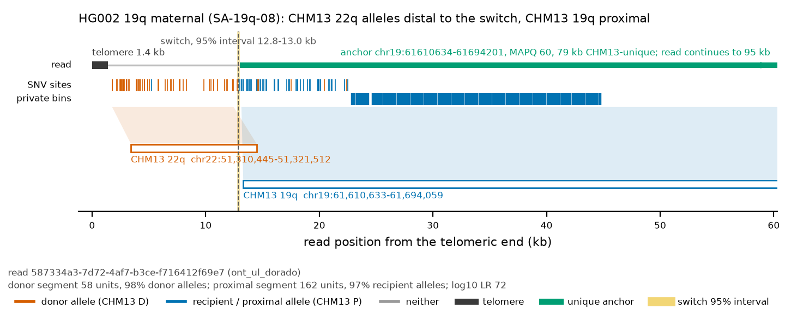
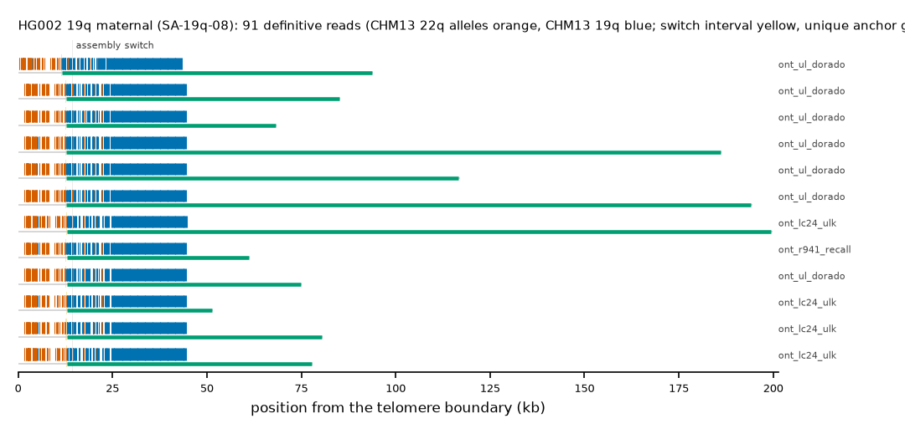

HG002 19q maternal: SA-19q-08
Claim HG002#2#chr19_MATERNAL#R. All claims
- cohort
- HG002 Q100
- individual
- HG002
- haplotype
- maternal
- arm
- 19q
- allele
- SA-19q-08 (foreign)
- model
- donor CHM13 22q, proximal CHM13 19q, recipient CHM13 19q, pattern DP
- claimed end(s)
HG002#2#chr19_MATERNAL#R- assembly switch
- 14,270 bp from the telomere boundary; on CHM13 chr19:61694373; own-window projection 14189-14443 bp
- v1 verdict
- confirmed (confirmed)
- definitive tier
- definitive (>= 2 datasets)
- reads
- 98 conclusive switch-concordant, 0 discordant, 0 contradicting, 246 consistent; 91 definitive (hifi_revio_3cells,hifi_revio_pbmay24,hifi_sprq_30hr,hifi_vega_24hr,ont_duplex,ont_lc24_ulk,ont_q28,ont_r941_recall,ont_ul_dorado)
- by tier
- definitive:91;conclusive_unique_anchor_off_end:7;consistent:246
- source
- HG002 Q100 v1.1 public read alignments (16 files; 12 independent datasets after molecule de-duplication)


Conclusive and contradicting reads (124)
355 further reads are consistent (switch test passed, but no terminal telomere, anchor or integrity); they are
listed in reads.tsv.gz. Switch: 95% interval in subtelomere coordinates (kb from the
telomere boundary) and projected on CHM13 19q. Each samtools command prints the read's record
from its public file (CRAM: add the CHM13 v2.0 FASTA as -T).
| read | dataset | tier | length | switch (subtelomere, kb) | switch on CHM13 | donor units / purity | proximal units / purity | anchor (CHM13, MAPQ, unique) | own-assembly best end | fetch |
|---|---|---|---|---|---|---|---|---|---|---|
m84011_220902_175841_s1/244122128/ccs | hifi_revio_3cells | definitive | 23,737 | 12.6-12.9 | chr19:61694201-61694455 | 58 / 0.98 | 55 / 0.91 | chr19:61683832-61694201, 60, 5.4 kb | HG002#2#chr19_MATERNAL#R (99.8%) ✓ | samtoolssamtools view -F 0x900 -X 'https://human-pangenomics.s3.amazonaws.com/T2T/HG002/assemblies/polishing/HG002/v1.1/mapping/hifi_revio_3cell/hg002v1.1_hifi_revio_3cells.bam' 'https://human-pangenomics.s3.amazonaws.com/T2T/HG002/assemblies/polishing/HG002/v1.1/mapping/hifi_revio_3cell/hg002v1.1_hifi_revio_3cells.bam.bai' 'chr19_MATERNAL:61272819-61317335' | awk -v r='m84011_220902_175841_s1/244122128/ccs' '$1==r' |
m84031_231217_034919_s2/216662436/ccs | hifi_revio_pbmay24 | definitive | 24,189 | 11.9-12.1 | chr19:61694201-61694456 | 58 / 0.98 | 60 / 0.92 | chr19:61682765-61694201, 60, 6.5 kb | HG002#2#chr19_MATERNAL#R (99.7%) ✓ | samtoolssamtools view -F 0x900 -X 'https://human-pangenomics.s3.amazonaws.com/T2T/HG002/assemblies/polishing/HG002/v1.1/mapping/hifi_revio_pbmay24/hg002v1.1_hifi_revio_pbmay24.pri.bam' 'https://human-pangenomics.s3.amazonaws.com/T2T/HG002/assemblies/polishing/HG002/v1.1/mapping/hifi_revio_pbmay24/hg002v1.1_hifi_revio_pbmay24.pri.bam.bai' 'chr19_MATERNAL:61272819-61317335' | awk -v r='m84031_231217_034919_s2/216662436/ccs' '$1==r' |
m84031_231217_062403_s3/249958551/ccs | hifi_revio_pbmay24 | definitive | 24,810 | 12.7-12.9 | chr19:61694201-61694455 | 58 / 0.98 | 60 / 0.92 | chr19:61682895-61694201, 60, 6.4 kb | HG002#2#chr19_MATERNAL#R (99.9%) ✓ | samtoolssamtools view -F 0x900 -X 'https://human-pangenomics.s3.amazonaws.com/T2T/HG002/assemblies/polishing/HG002/v1.1/mapping/hifi_revio_pbmay24/hg002v1.1_hifi_revio_pbmay24.pri.bam' 'https://human-pangenomics.s3.amazonaws.com/T2T/HG002/assemblies/polishing/HG002/v1.1/mapping/hifi_revio_pbmay24/hg002v1.1_hifi_revio_pbmay24.pri.bam.bai' 'chr19_MATERNAL:61272819-61317335' | awk -v r='m84031_231217_062403_s3/249958551/ccs' '$1==r' |
m84030_241023_014024_s2/12780218/ccs | hifi_sprq_30hr | definitive | 28,103 | 11.9-12.1 | chr19:61694201-61694455 | 58 / 0.98 | 79 / 0.94 | chr19:61678858-61694201, 60, 10.4 kb | HG002#2#chr19_MATERNAL#R (99.8%) ✓ | samtoolssamtools view -F 0x900 -X 'https://human-pangenomics.s3.amazonaws.com/T2T/HG002/assemblies/polishing/HG002/v1.1/mapping/sprq_revio_30hr_nov24/HG002.sprq_revio_30hr.pri.bam' 'https://human-pangenomics.s3.amazonaws.com/T2T/HG002/assemblies/polishing/HG002/v1.1/mapping/sprq_revio_30hr_nov24/HG002.sprq_revio_30hr.pri.bam.bai' 'chr19_MATERNAL:61272819-61317335' | awk -v r='m84030_241023_014024_s2/12780218/ccs' '$1==r' |
m84324_241101_215012_s1/32179179/ccs | hifi_sprq_30hr | definitive | 23,803 | 12.6-12.8 | chr19:61694201-61694455 | 58 / 0.98 | 55 / 0.91 | chr19:61683710-61694201, 60, 5.6 kb | HG002#2#chr19_MATERNAL#R (99.9%) ✓ | samtoolssamtools view -F 0x900 -X 'https://human-pangenomics.s3.amazonaws.com/T2T/HG002/assemblies/polishing/HG002/v1.1/mapping/sprq_revio_30hr_nov24/HG002.sprq_revio_30hr.pri.bam' 'https://human-pangenomics.s3.amazonaws.com/T2T/HG002/assemblies/polishing/HG002/v1.1/mapping/sprq_revio_30hr_nov24/HG002.sprq_revio_30hr.pri.bam.bai' 'chr19_MATERNAL:61272819-61317335' | awk -v r='m84324_241101_215012_s1/32179179/ccs' '$1==r' |
m21009_241011_231051/64619700/ccs | hifi_vega_24hr | definitive | 30,309 | 12.6-12.8 | chr19:61694201-61694455 | 58 / 0.98 | 87 / 0.94 | chr19:61677380-61694201, 60, 11.9 kb | HG002#2#chr19_MATERNAL#R (99.7%) ✓ | samtoolssamtools view -F 0x900 -X 'https://human-pangenomics.s3.amazonaws.com/T2T/HG002/assemblies/polishing/HG002/v1.1/mapping/hifi_vega_24hr_dec24/HG002.hifi_vega_24hr_17.5kb.pri.bam' 'https://human-pangenomics.s3.amazonaws.com/T2T/HG002/assemblies/polishing/HG002/v1.1/mapping/hifi_vega_24hr_dec24/HG002.hifi_vega_24hr_17.5kb.pri.bam.bai' 'chr19_MATERNAL:61272819-61317335' | awk -v r='m21009_241011_231051/64619700/ccs' '$1==r' |
m21009_241011_231051/62324867/ccs | hifi_vega_24hr | definitive | 28,523 | 12.6-12.9 | chr19:61694201-61694455 | 57 / 0.98 | 76 / 0.93 | chr19:61679257-61694201, 60, 10.0 kb | HG002#2#chr19_MATERNAL#R (99.7%) ✓ | samtoolssamtools view -F 0x900 -X 'https://human-pangenomics.s3.amazonaws.com/T2T/HG002/assemblies/polishing/HG002/v1.1/mapping/hifi_vega_24hr_dec24/HG002.hifi_vega_24hr_17.5kb.pri.bam' 'https://human-pangenomics.s3.amazonaws.com/T2T/HG002/assemblies/polishing/HG002/v1.1/mapping/hifi_vega_24hr_dec24/HG002.hifi_vega_24hr_17.5kb.pri.bam.bai' 'chr19_MATERNAL:61272819-61317335' | awk -v r='m21009_241011_231051/62324867/ccs' '$1==r' |
m21009_241011_231051/105515298/ccs | hifi_vega_24hr | definitive | 28,371 | 12.6-12.8 | chr19:61694201-61694455 | 58 / 0.98 | 78 / 0.94 | chr19:61679296-61694201, 60, 10.0 kb | HG002#2#chr19_MATERNAL#R (99.7%) ✓ | samtoolssamtools view -F 0x900 -X 'https://human-pangenomics.s3.amazonaws.com/T2T/HG002/assemblies/polishing/HG002/v1.1/mapping/hifi_vega_24hr_dec24/HG002.hifi_vega_24hr_17.5kb.pri.bam' 'https://human-pangenomics.s3.amazonaws.com/T2T/HG002/assemblies/polishing/HG002/v1.1/mapping/hifi_vega_24hr_dec24/HG002.hifi_vega_24hr_17.5kb.pri.bam.bai' 'chr19_MATERNAL:61272819-61317335' | awk -v r='m21009_241011_231051/105515298/ccs' '$1==r' |
m21009_241011_231051/50399010/ccs | hifi_vega_24hr | definitive | 25,281 | 11.9-12.1 | chr19:61694201-61694455 | 58 / 0.98 | 65 / 0.92 | chr19:61681637-61694201, 60, 7.6 kb | HG002#2#chr19_MATERNAL#R (99.8%) ✓ | samtoolssamtools view -F 0x900 -X 'https://human-pangenomics.s3.amazonaws.com/T2T/HG002/assemblies/polishing/HG002/v1.1/mapping/hifi_vega_24hr_dec24/HG002.hifi_vega_24hr_17.5kb.pri.bam' 'https://human-pangenomics.s3.amazonaws.com/T2T/HG002/assemblies/polishing/HG002/v1.1/mapping/hifi_vega_24hr_dec24/HG002.hifi_vega_24hr_17.5kb.pri.bam.bai' 'chr19_MATERNAL:61272819-61317335' | awk -v r='m21009_241011_231051/50399010/ccs' '$1==r' |
m21020_241106_222229/252512148/ccs | hifi_vega_24hr | definitive | 24,519 | 12.7-12.9 | chr19:61694201-61694455 | 58 / 0.98 | 59 / 0.92 | chr19:61683066-61694201, 60, 6.2 kb | HG002#2#chr19_MATERNAL#R (99.9%) ✓ | samtoolssamtools view -F 0x900 -X 'https://human-pangenomics.s3.amazonaws.com/T2T/HG002/assemblies/polishing/HG002/v1.1/mapping/hifi_vega_24hr_dec24/HG002.hifi_vega_24hr_17.5kb.pri.bam' 'https://human-pangenomics.s3.amazonaws.com/T2T/HG002/assemblies/polishing/HG002/v1.1/mapping/hifi_vega_24hr_dec24/HG002.hifi_vega_24hr_17.5kb.pri.bam.bai' 'chr19_MATERNAL:61272819-61317335' | awk -v r='m21020_241106_222229/252512148/ccs' '$1==r' |
m21011_241105_202739/118752598/ccs | hifi_vega_24hr | definitive | 23,931 | 12.6-12.9 | chr19:61694201-61694455 | 58 / 0.98 | 56 / 0.91 | chr19:61683558-61694201, 60, 5.7 kb | HG002#2#chr19_MATERNAL#R (99.9%) ✓ | samtoolssamtools view -F 0x900 -X 'https://human-pangenomics.s3.amazonaws.com/T2T/HG002/assemblies/polishing/HG002/v1.1/mapping/hifi_vega_24hr_dec24/HG002.hifi_vega_24hr_17.5kb.pri.bam' 'https://human-pangenomics.s3.amazonaws.com/T2T/HG002/assemblies/polishing/HG002/v1.1/mapping/hifi_vega_24hr_dec24/HG002.hifi_vega_24hr_17.5kb.pri.bam.bai' 'chr19_MATERNAL:61272819-61317335' | awk -v r='m21011_241105_202739/118752598/ccs' '$1==r' |
b41a3e52-1a5f-4742-904a-0bc86c40ee76;dd7eb292-3893-4cc3-b9e7-3ed23d7cfee9 | ont_duplex | definitive | 59,400 | 11.8-12.1 | chr19:61694201-61694455 | 58 / 0.98 | 160 / 0.97 | chr19:61647590-61694201, 60, 41.7 kb | HG002#2#chr19_MATERNAL#R (99.9%) ✓ | samtoolssamtools view -F 0x900 -X 'https://human-pangenomics.s3.amazonaws.com/T2T/HG002/assemblies/polishing/HG002/v1.1/mapping/ont_r10_duplex/hg002v1.1_ont_r10_duplex.pri.bam' 'https://human-pangenomics.s3.amazonaws.com/T2T/HG002/assemblies/polishing/HG002/v1.1/mapping/ont_r10_duplex/hg002v1.1_ont_r10_duplex.pri.bam.bai' 'chr19_MATERNAL:61272819-61317335' | awk -v r='b41a3e52-1a5f-4742-904a-0bc86c40ee76;dd7eb292-3893-4cc3-b9e7-3ed23d7cfee9' '$1==r' |
c4787474-d170-4c49-aeb1-89cf60ec2e78;e3513530-7807-49d0-bf2e-42489748642c | ont_duplex | definitive | 48,285 | 12.6-12.9 | chr19:61694201-61694455 | 58 / 0.98 | 160 / 0.97 | chr19:61659629-61694201, 60, 29.6 kb | HG002#2#chr19_MATERNAL#R (99.9%) ✓ | samtoolssamtools view -F 0x900 -X 'https://human-pangenomics.s3.amazonaws.com/T2T/HG002/assemblies/polishing/HG002/v1.1/mapping/ont_r10_duplex/hg002v1.1_ont_r10_duplex.pri.bam' 'https://human-pangenomics.s3.amazonaws.com/T2T/HG002/assemblies/polishing/HG002/v1.1/mapping/ont_r10_duplex/hg002v1.1_ont_r10_duplex.pri.bam.bai' 'chr19_MATERNAL:61272819-61317335' | awk -v r='c4787474-d170-4c49-aeb1-89cf60ec2e78;e3513530-7807-49d0-bf2e-42489748642c' '$1==r' |
4a5c1f1c-9741-4e9d-b092-975e36e9c2da;6a52c40c-592d-46ae-94a5-1fb5b0b89318 | ont_duplex | definitive | 42,785 | 11.9-12.1 | chr19:61694201-61694459 | 57 / 0.98 | 152 / 0.97 | chr19:61664140-61694201, 60, 25.1 kb | HG002#2#chr19_MATERNAL#R (99.6%) ✓ | samtoolssamtools view -F 0x900 -X 'https://human-pangenomics.s3.amazonaws.com/T2T/HG002/assemblies/polishing/HG002/v1.1/mapping/ont_r10_duplex/hg002v1.1_ont_r10_duplex.pri.bam' 'https://human-pangenomics.s3.amazonaws.com/T2T/HG002/assemblies/polishing/HG002/v1.1/mapping/ont_r10_duplex/hg002v1.1_ont_r10_duplex.pri.bam.bai' 'chr19_MATERNAL:61272819-61317335' | awk -v r='4a5c1f1c-9741-4e9d-b092-975e36e9c2da;6a52c40c-592d-46ae-94a5-1fb5b0b89318' '$1==r' |
e03b13f8-ac4c-4aef-83ab-0c60ef7e35e7;4c0772c5-360d-4a2d-857b-35e5a1e380f3 | ont_duplex | definitive | 35,234 | 12.4-12.6 | chr19:61694201-61694450 | 54 / 0.96 | 108 / 0.94 | chr19:61672343-61694185, 60, 16.9 kb | HG002#2#chr19_MATERNAL#R (92.1%) ✓ | samtoolssamtools view -F 0x900 -X 'https://human-pangenomics.s3.amazonaws.com/T2T/HG002/assemblies/polishing/HG002/v1.1/mapping/ont_r10_duplex/hg002v1.1_ont_r10_duplex.pri.bam' 'https://human-pangenomics.s3.amazonaws.com/T2T/HG002/assemblies/polishing/HG002/v1.1/mapping/ont_r10_duplex/hg002v1.1_ont_r10_duplex.pri.bam.bai' 'chr19_MATERNAL:61272819-61317335' | awk -v r='e03b13f8-ac4c-4aef-83ab-0c60ef7e35e7;4c0772c5-360d-4a2d-857b-35e5a1e380f3' '$1==r' |
29776e52-1da1-48a0-bc58-faee973482a8;a6dad9d6-0de7-43e7-988f-a4b9d25b6f69 | ont_duplex | definitive | 33,612 | 12.7-12.9 | chr19:61694201-61694455 | 58 / 0.98 | 101 / 0.95 | chr19:61674329-61694201, 60, 14.9 kb | HG002#2#chr19_MATERNAL#R (99.9%) ✓ | samtoolssamtools view -F 0x900 -X 'https://human-pangenomics.s3.amazonaws.com/T2T/HG002/assemblies/polishing/HG002/v1.1/mapping/ont_r10_duplex/hg002v1.1_ont_r10_duplex.pri.bam' 'https://human-pangenomics.s3.amazonaws.com/T2T/HG002/assemblies/polishing/HG002/v1.1/mapping/ont_r10_duplex/hg002v1.1_ont_r10_duplex.pri.bam.bai' 'chr19_MATERNAL:61272819-61317335' | awk -v r='29776e52-1da1-48a0-bc58-faee973482a8;a6dad9d6-0de7-43e7-988f-a4b9d25b6f69' '$1==r' |
c2702160-c990-41d9-b5d5-0bb5b2d47f5e;55857d9a-0a96-4b95-9d4c-c5b4260ede63 | ont_duplex | definitive | 33,483 | 12.5-12.7 | chr19:61694201-61694448 | 56 / 0.95 | 101 / 0.95 | chr19:61674385-61694201, 60, 14.9 kb | HG002#2#chr19_MATERNAL#R (97.7%) ✓ | samtoolssamtools view -F 0x900 -X 'https://human-pangenomics.s3.amazonaws.com/T2T/HG002/assemblies/polishing/HG002/v1.1/mapping/ont_r10_duplex/hg002v1.1_ont_r10_duplex.pri.bam' 'https://human-pangenomics.s3.amazonaws.com/T2T/HG002/assemblies/polishing/HG002/v1.1/mapping/ont_r10_duplex/hg002v1.1_ont_r10_duplex.pri.bam.bai' 'chr19_MATERNAL:61272819-61317335' | awk -v r='c2702160-c990-41d9-b5d5-0bb5b2d47f5e;55857d9a-0a96-4b95-9d4c-c5b4260ede63' '$1==r' |
a3035a95-521c-411c-9164-bad5cd552db5;8e990d9b-11ca-4d50-954e-a4a29a6c180f | ont_duplex | definitive | 33,178 | 12.7-12.9 | chr19:61694201-61694454 | 58 / 0.98 | 98 / 0.95 | chr19:61675007-61694201, 60, 14.3 kb | HG002#2#chr19_MATERNAL#R (99.9%) ✓ | samtoolssamtools view -F 0x900 -X 'https://human-pangenomics.s3.amazonaws.com/T2T/HG002/assemblies/polishing/HG002/v1.1/mapping/ont_r10_duplex/hg002v1.1_ont_r10_duplex.pri.bam' 'https://human-pangenomics.s3.amazonaws.com/T2T/HG002/assemblies/polishing/HG002/v1.1/mapping/ont_r10_duplex/hg002v1.1_ont_r10_duplex.pri.bam.bai' 'chr19_MATERNAL:61272819-61317335' | awk -v r='a3035a95-521c-411c-9164-bad5cd552db5;8e990d9b-11ca-4d50-954e-a4a29a6c180f' '$1==r' |
c63687c1-ba27-48b4-990b-96f8c5eb2bac;74b89fe8-202e-4051-80e3-62f41cbc7c6b | ont_duplex | definitive | 32,831 | 12.7-12.9 | chr19:61694201-61694455 | 58 / 0.98 | 97 / 0.95 | chr19:61675142-61694201, 60, 14.1 kb | HG002#2#chr19_MATERNAL#R (99.8%) ✓ | samtoolssamtools view -F 0x900 -X 'https://human-pangenomics.s3.amazonaws.com/T2T/HG002/assemblies/polishing/HG002/v1.1/mapping/ont_r10_duplex/hg002v1.1_ont_r10_duplex.pri.bam' 'https://human-pangenomics.s3.amazonaws.com/T2T/HG002/assemblies/polishing/HG002/v1.1/mapping/ont_r10_duplex/hg002v1.1_ont_r10_duplex.pri.bam.bai' 'chr19_MATERNAL:61272819-61317335' | awk -v r='c63687c1-ba27-48b4-990b-96f8c5eb2bac;74b89fe8-202e-4051-80e3-62f41cbc7c6b' '$1==r' |
5d20438b-30d1-423f-a295-8f7f420124eb;6534ae05-53b7-42f3-b88a-eb46783a8548 | ont_duplex | definitive | 29,987 | 11.8-12.0 | chr19:61694201-61694450 | 58 / 0.98 | 89 / 0.96 | chr19:61676734-61694201, 60, 12.5 kb | HG002#2#chr19_MATERNAL#R (98.3%) ✓ | samtoolssamtools view -F 0x900 -X 'https://human-pangenomics.s3.amazonaws.com/T2T/HG002/assemblies/polishing/HG002/v1.1/mapping/ont_r10_duplex/hg002v1.1_ont_r10_duplex.pri.bam' 'https://human-pangenomics.s3.amazonaws.com/T2T/HG002/assemblies/polishing/HG002/v1.1/mapping/ont_r10_duplex/hg002v1.1_ont_r10_duplex.pri.bam.bai' 'chr19_MATERNAL:61272819-61317335' | awk -v r='5d20438b-30d1-423f-a295-8f7f420124eb;6534ae05-53b7-42f3-b88a-eb46783a8548' '$1==r' |
9966514b-096b-428c-bd72-ea87578bc093;a71e00cf-b3e7-48ce-9f31-ef027c8631b6 | ont_duplex | definitive | 31,058 | 12.7-12.9 | chr19:61694201-61694455 | 58 / 0.98 | 88 / 0.94 | chr19:61676927-61694201, 60, 12.3 kb | HG002#2#chr19_MATERNAL#R (99.9%) ✓ | samtoolssamtools view -F 0x900 -X 'https://human-pangenomics.s3.amazonaws.com/T2T/HG002/assemblies/polishing/HG002/v1.1/mapping/ont_r10_duplex/hg002v1.1_ont_r10_duplex.pri.bam' 'https://human-pangenomics.s3.amazonaws.com/T2T/HG002/assemblies/polishing/HG002/v1.1/mapping/ont_r10_duplex/hg002v1.1_ont_r10_duplex.pri.bam.bai' 'chr19_MATERNAL:61272819-61317335' | awk -v r='9966514b-096b-428c-bd72-ea87578bc093;a71e00cf-b3e7-48ce-9f31-ef027c8631b6' '$1==r' |
50f8b93a-a668-48be-ac36-b4636e31de71;c7cb8e36-b587-4432-be23-da8cfdd9a12f | ont_duplex | definitive | 25,546 | 11.4-11.7 | chr19:61694201-61694454 | 58 / 0.97 | 68 / 0.93 | chr19:61680925-61694201, 60, 8.3 kb | HG002#2#chr19_MATERNAL#R (99.3%) ✓ | samtoolssamtools view -F 0x900 -X 'https://human-pangenomics.s3.amazonaws.com/T2T/HG002/assemblies/polishing/HG002/v1.1/mapping/ont_r10_duplex/hg002v1.1_ont_r10_duplex.pri.bam' 'https://human-pangenomics.s3.amazonaws.com/T2T/HG002/assemblies/polishing/HG002/v1.1/mapping/ont_r10_duplex/hg002v1.1_ont_r10_duplex.pri.bam.bai' 'chr19_MATERNAL:61272819-61317335' | awk -v r='50f8b93a-a668-48be-ac36-b4636e31de71;c7cb8e36-b587-4432-be23-da8cfdd9a12f' '$1==r' |
118d8794-335f-4fa9-8043-ce5968826966;2bad52a4-73d1-46fe-9832-bf4baf690623 | ont_duplex | definitive | 26,720 | 12.6-13.2 | chr19:61694201-61694789 | 55 / 0.96 | 62 / 0.92 | chr19:61681378-61694201, 60, 7.9 kb | HG002#2#chr19_MATERNAL#R (90.5%) ✓ | samtoolssamtools view -F 0x900 -X 'https://human-pangenomics.s3.amazonaws.com/T2T/HG002/assemblies/polishing/HG002/v1.1/mapping/ont_r10_duplex/hg002v1.1_ont_r10_duplex.pri.bam' 'https://human-pangenomics.s3.amazonaws.com/T2T/HG002/assemblies/polishing/HG002/v1.1/mapping/ont_r10_duplex/hg002v1.1_ont_r10_duplex.pri.bam.bai' 'chr19_MATERNAL:61272819-61317335' | awk -v r='118d8794-335f-4fa9-8043-ce5968826966;2bad52a4-73d1-46fe-9832-bf4baf690623' '$1==r' |
af8c6619-4d7f-45fe-ad58-2be507d33cd8;e181632d-f83e-4391-963d-6ae6a31a2dd6 | ont_duplex | definitive | 23,916 | 12.6-12.8 | chr19:61694201-61694455 | 58 / 0.98 | 54 / 0.91 | chr19:61683922-61694201, 60, 5.3 kb | HG002#2#chr19_MATERNAL#R (99.9%) ✓ | samtoolssamtools view -F 0x900 -X 'https://human-pangenomics.s3.amazonaws.com/T2T/HG002/assemblies/polishing/HG002/v1.1/mapping/ont_r10_duplex/hg002v1.1_ont_r10_duplex.pri.bam' 'https://human-pangenomics.s3.amazonaws.com/T2T/HG002/assemblies/polishing/HG002/v1.1/mapping/ont_r10_duplex/hg002v1.1_ont_r10_duplex.pri.bam.bai' 'chr19_MATERNAL:61272819-61317335' | awk -v r='af8c6619-4d7f-45fe-ad58-2be507d33cd8;e181632d-f83e-4391-963d-6ae6a31a2dd6' '$1==r' |
5d1efb88-0939-4219-9675-006fbda0ad0b | ont_lc24_ulk | definitive | 475,898 | 12.6-12.9 | chr19:61694201-61694456 | 58 / 0.98 | 160 / 0.97 | chr19:61231742-61694201, 60, 457.5 kb | HG002#2#chr19_MATERNAL#R (98.6%) ✓ | samtoolssamtools view -F 0x900 -X 'https://human-pangenomics.s3.amazonaws.com/T2T/HG002/assemblies/polishing/HG002/v1.1/mapping/ont_lc24_ulk/hg002v1.1_ont_lc24_ulk.pri.bam' 'https://human-pangenomics.s3.amazonaws.com/T2T/HG002/assemblies/polishing/HG002/v1.1/mapping/ont_lc24_ulk/hg002v1.1_ont_lc24_ulk.pri.bam.bai' 'chr19_MATERNAL:61272819-61317335' | awk -v r='5d1efb88-0939-4219-9675-006fbda0ad0b' '$1==r' |
57ec0764-3bb5-4349-b653-3b4470fab7e3 | ont_lc24_ulk | definitive | 200,680 | 12.7-12.9 | chr19:61694201-61694455 | 58 / 0.98 | 161 / 0.97 | chr19:61506712-61694201, 60, 182.6 kb | HG002#2#chr19_MATERNAL#R (99.2%) ✓ | samtoolssamtools view -F 0x900 -X 'https://human-pangenomics.s3.amazonaws.com/T2T/HG002/assemblies/polishing/HG002/v1.1/mapping/ont_lc24_ulk/hg002v1.1_ont_lc24_ulk.pri.bam' 'https://human-pangenomics.s3.amazonaws.com/T2T/HG002/assemblies/polishing/HG002/v1.1/mapping/ont_lc24_ulk/hg002v1.1_ont_lc24_ulk.pri.bam.bai' 'chr19_MATERNAL:61272819-61317335' | awk -v r='57ec0764-3bb5-4349-b653-3b4470fab7e3' '$1==r' |
ab175eb4-9d23-4672-af62-f93e45f37672 | ont_lc24_ulk | definitive | 81,581 | 12.6-12.9 | chr19:61694201-61694455 | 58 / 0.98 | 160 / 0.97 | chr19:61625418-61694201, 60, 63.8 kb | HG002#2#chr19_MATERNAL#R (99.7%) ✓ | samtoolssamtools view -F 0x900 -X 'https://human-pangenomics.s3.amazonaws.com/T2T/HG002/assemblies/polishing/HG002/v1.1/mapping/ont_lc24_ulk/hg002v1.1_ont_lc24_ulk.pri.bam' 'https://human-pangenomics.s3.amazonaws.com/T2T/HG002/assemblies/polishing/HG002/v1.1/mapping/ont_lc24_ulk/hg002v1.1_ont_lc24_ulk.pri.bam.bai' 'chr19_MATERNAL:61272819-61317335' | awk -v r='ab175eb4-9d23-4672-af62-f93e45f37672' '$1==r' |
46871cec-32a6-484c-9c64-d266d6e0a3a9 | ont_lc24_ulk | definitive | 78,185 | 12.7-12.9 | chr19:61694201-61694456 | 58 / 0.98 | 160 / 0.97 | chr19:61628154-61694201, 60, 61.1 kb | HG002#2#chr19_MATERNAL#R (99.7%) ✓ | samtoolssamtools view -F 0x900 -X 'https://human-pangenomics.s3.amazonaws.com/T2T/HG002/assemblies/polishing/HG002/v1.1/mapping/ont_lc24_ulk/hg002v1.1_ont_lc24_ulk.pri.bam' 'https://human-pangenomics.s3.amazonaws.com/T2T/HG002/assemblies/polishing/HG002/v1.1/mapping/ont_lc24_ulk/hg002v1.1_ont_lc24_ulk.pri.bam.bai' 'chr19_MATERNAL:61272819-61317335' | awk -v r='46871cec-32a6-484c-9c64-d266d6e0a3a9' '$1==r' |
f4f155fe-a259-458f-ae5c-6f555d67d05f | ont_lc24_ulk | definitive | 52,778 | 12.7-12.9 | chr19:61694201-61694456 | 57 / 0.98 | 160 / 0.97 | chr19:61655589-61694201, 60, 33.7 kb | HG002#2#chr19_MATERNAL#R (99.6%) ✓ | samtoolssamtools view -F 0x900 -X 'https://human-pangenomics.s3.amazonaws.com/T2T/HG002/assemblies/polishing/HG002/v1.1/mapping/ont_lc24_ulk/hg002v1.1_ont_lc24_ulk.pri.bam' 'https://human-pangenomics.s3.amazonaws.com/T2T/HG002/assemblies/polishing/HG002/v1.1/mapping/ont_lc24_ulk/hg002v1.1_ont_lc24_ulk.pri.bam.bai' 'chr19_MATERNAL:61272819-61317335' | awk -v r='f4f155fe-a259-458f-ae5c-6f555d67d05f' '$1==r' |
70224419-613d-4e25-8e4d-5a7079704149 | ont_lc24_ulk | definitive | 52,788 | 12.6-12.9 | chr19:61694201-61694455 | 58 / 0.98 | 160 / 0.97 | chr19:61655827-61694201, 60, 33.4 kb | HG002#2#chr19_MATERNAL#R (99.5%) ✓ | samtoolssamtools view -F 0x900 -X 'https://human-pangenomics.s3.amazonaws.com/T2T/HG002/assemblies/polishing/HG002/v1.1/mapping/ont_lc24_ulk/hg002v1.1_ont_lc24_ulk.pri.bam' 'https://human-pangenomics.s3.amazonaws.com/T2T/HG002/assemblies/polishing/HG002/v1.1/mapping/ont_lc24_ulk/hg002v1.1_ont_lc24_ulk.pri.bam.bai' 'chr19_MATERNAL:61272819-61317335' | awk -v r='70224419-613d-4e25-8e4d-5a7079704149' '$1==r' |
abec8e48-4242-4ed6-8b4b-169386e6d428 | ont_lc24_ulk | definitive | 33,975 | 12.7-12.9 | chr19:61694201-61694455 | 58 / 0.98 | 103 / 0.94 | chr19:61673983-61694201, 60, 15.3 kb | HG002#2#chr19_MATERNAL#R (99.8%) ✓ | samtoolssamtools view -F 0x900 -X 'https://human-pangenomics.s3.amazonaws.com/T2T/HG002/assemblies/polishing/HG002/v1.1/mapping/ont_lc24_ulk/hg002v1.1_ont_lc24_ulk.pri.bam' 'https://human-pangenomics.s3.amazonaws.com/T2T/HG002/assemblies/polishing/HG002/v1.1/mapping/ont_lc24_ulk/hg002v1.1_ont_lc24_ulk.pri.bam.bai' 'chr19_MATERNAL:61272819-61317335' | awk -v r='abec8e48-4242-4ed6-8b4b-169386e6d428' '$1==r' |
6a4f98c4-231f-42eb-9dc4-13b3fdd94a6b | ont_lc24_ulk | definitive | 27,148 | 11.4-11.7 | chr19:61694201-61694455 | 58 / 0.98 | 76 / 0.93 | chr19:61679288-61694201, 60, 10.0 kb | HG002#2#chr19_MATERNAL#R (99.7%) ✓ | samtoolssamtools view -F 0x900 -X 'https://human-pangenomics.s3.amazonaws.com/T2T/HG002/assemblies/polishing/HG002/v1.1/mapping/ont_lc24_ulk/hg002v1.1_ont_lc24_ulk.pri.bam' 'https://human-pangenomics.s3.amazonaws.com/T2T/HG002/assemblies/polishing/HG002/v1.1/mapping/ont_lc24_ulk/hg002v1.1_ont_lc24_ulk.pri.bam.bai' 'chr19_MATERNAL:61272819-61317335' | awk -v r='6a4f98c4-231f-42eb-9dc4-13b3fdd94a6b' '$1==r' |
8daebd44-d8bd-4737-90f6-eac6bee0100d | ont_q28 | definitive | 113,991 | 12.6-12.9 | chr19:61694201-61694455 | 58 / 0.98 | 160 / 0.97 | chr19:61592935-61694201, 60, 96.3 kb | HG002#2#chr19_MATERNAL#R (99.6%) ✓ | samtoolssamtools view -F 0x900 -X 'https://human-pangenomics.s3.amazonaws.com/T2T/HG002/assemblies/polishing/HG002/v1.1/mapping/ont_epi2me_q28/hg002v1.1_ont_epi2me_q28.pri.bam' 'https://human-pangenomics.s3.amazonaws.com/T2T/HG002/assemblies/polishing/HG002/v1.1/mapping/ont_epi2me_q28/hg002v1.1_ont_epi2me_q28.pri.bam.bai' 'chr19_MATERNAL:61272819-61317335' | awk -v r='8daebd44-d8bd-4737-90f6-eac6bee0100d' '$1==r' |
bb138628-9d66-4916-8cab-c733b4820fbd | ont_q28 | definitive | 78,969 | 12.6-12.8 | chr19:61694201-61694455 | 58 / 0.98 | 160 / 0.97 | chr19:61627993-61694201, 60, 61.3 kb | HG002#2#chr19_MATERNAL#R (99.3%) ✓ | samtoolssamtools view -F 0x900 -X 'https://human-pangenomics.s3.amazonaws.com/T2T/HG002/assemblies/polishing/HG002/v1.1/mapping/ont_epi2me_q28/hg002v1.1_ont_epi2me_q28.pri.bam' 'https://human-pangenomics.s3.amazonaws.com/T2T/HG002/assemblies/polishing/HG002/v1.1/mapping/ont_epi2me_q28/hg002v1.1_ont_epi2me_q28.pri.bam.bai' 'chr19_MATERNAL:61272819-61317335' | awk -v r='bb138628-9d66-4916-8cab-c733b4820fbd' '$1==r' |
cd7e1b58-7745-41ce-a235-aa5a5c5f4614 | ont_q28 | definitive | 61,426 | 12.6-12.9 | chr19:61694201-61694455 | 58 / 0.98 | 160 / 0.97 | chr19:61646968-61694201, 60, 42.3 kb | HG002#2#chr19_MATERNAL#R (99.7%) ✓ | samtoolssamtools view -F 0x900 -X 'https://human-pangenomics.s3.amazonaws.com/T2T/HG002/assemblies/polishing/HG002/v1.1/mapping/ont_epi2me_q28/hg002v1.1_ont_epi2me_q28.pri.bam' 'https://human-pangenomics.s3.amazonaws.com/T2T/HG002/assemblies/polishing/HG002/v1.1/mapping/ont_epi2me_q28/hg002v1.1_ont_epi2me_q28.pri.bam.bai' 'chr19_MATERNAL:61272819-61317335' | awk -v r='cd7e1b58-7745-41ce-a235-aa5a5c5f4614' '$1==r' |
ba75277f-e867-495f-ad15-2a0b81b0eab0 | ont_q28 | definitive | 43,142 | 11.9-12.1 | chr19:61694201-61694455 | 58 / 0.98 | 151 / 0.97 | chr19:61664137-61694201, 60, 25.1 kb | HG002#2#chr19_MATERNAL#R (99.8%) ✓ | samtoolssamtools view -F 0x900 -X 'https://human-pangenomics.s3.amazonaws.com/T2T/HG002/assemblies/polishing/HG002/v1.1/mapping/ont_epi2me_q28/hg002v1.1_ont_epi2me_q28.pri.bam' 'https://human-pangenomics.s3.amazonaws.com/T2T/HG002/assemblies/polishing/HG002/v1.1/mapping/ont_epi2me_q28/hg002v1.1_ont_epi2me_q28.pri.bam.bai' 'chr19_MATERNAL:61272819-61317335' | awk -v r='ba75277f-e867-495f-ad15-2a0b81b0eab0' '$1==r' |
181e7818-5f7c-4caa-9486-67de050a7e3d | ont_q28 | definitive | 38,014 | 12.6-12.9 | chr19:61694201-61694455 | 58 / 0.98 | 117 / 0.96 | chr19:61671177-61694201, 60, 18.1 kb | HG002#2#chr19_MATERNAL#R (99.6%) ✓ | samtoolssamtools view -F 0x900 -X 'https://human-pangenomics.s3.amazonaws.com/T2T/HG002/assemblies/polishing/HG002/v1.1/mapping/ont_epi2me_q28/hg002v1.1_ont_epi2me_q28.pri.bam' 'https://human-pangenomics.s3.amazonaws.com/T2T/HG002/assemblies/polishing/HG002/v1.1/mapping/ont_epi2me_q28/hg002v1.1_ont_epi2me_q28.pri.bam.bai' 'chr19_MATERNAL:61272819-61317335' | awk -v r='181e7818-5f7c-4caa-9486-67de050a7e3d' '$1==r' |
9db33e07-3135-44bb-bf8c-194eee28ba3c | ont_q28 | definitive | 29,230 | 12.7-12.9 | chr19:61694201-61694456 | 58 / 0.98 | 79 / 0.94 | chr19:61678867-61694201, 60, 10.4 kb | HG002#2#chr19_MATERNAL#R (99.8%) ✓ | samtoolssamtools view -F 0x900 -X 'https://human-pangenomics.s3.amazonaws.com/T2T/HG002/assemblies/polishing/HG002/v1.1/mapping/ont_epi2me_q28/hg002v1.1_ont_epi2me_q28.pri.bam' 'https://human-pangenomics.s3.amazonaws.com/T2T/HG002/assemblies/polishing/HG002/v1.1/mapping/ont_epi2me_q28/hg002v1.1_ont_epi2me_q28.pri.bam.bai' 'chr19_MATERNAL:61272819-61317335' | awk -v r='9db33e07-3135-44bb-bf8c-194eee28ba3c' '$1==r' |
ecc9e1fa-c0c6-4553-a4e0-93676a40a1f6 | ont_q28 | definitive | 24,948 | 12.6-12.8 | chr19:61694201-61694448 | 57 / 0.98 | 60 / 0.92 | chr19:61682987-61694201, 60, 6.3 kb | HG002#2#chr19_MATERNAL#R (99.0%) ✓ | samtoolssamtools view -F 0x900 -X 'https://human-pangenomics.s3.amazonaws.com/T2T/HG002/assemblies/polishing/HG002/v1.1/mapping/ont_epi2me_q28/hg002v1.1_ont_epi2me_q28.pri.bam' 'https://human-pangenomics.s3.amazonaws.com/T2T/HG002/assemblies/polishing/HG002/v1.1/mapping/ont_epi2me_q28/hg002v1.1_ont_epi2me_q28.pri.bam.bai' 'chr19_MATERNAL:61272819-61317335' | awk -v r='ecc9e1fa-c0c6-4553-a4e0-93676a40a1f6' '$1==r' |
166f995d-7a8f-4a35-bb34-eb33aefcfded | ont_r941_recall | definitive | 150,387 | 12.5-12.9 | chr19:61694059-61694443 | 56 / 0.96 | 142 / 0.97 | chr19:61554448-61694059, 60, 134.7 kb | HG002#2#chr19_MATERNAL#R (89.1%) ✓ | samtoolssamtools view -F 0x900 -X 'https://human-pangenomics.s3.amazonaws.com/T2T/HG002/assemblies/polishing/HG002/v1.1/mapping/ont_methylation_recall_oct2024/03_08_22_R941_HG002.pri.bam' 'https://human-pangenomics.s3.amazonaws.com/T2T/HG002/assemblies/polishing/HG002/v1.1/mapping/ont_methylation_recall_oct2024/03_08_22_R941_HG002.pri.bam.bai' 'chr19_MATERNAL:61272819-61317335' | awk -v r='166f995d-7a8f-4a35-bb34-eb33aefcfded' '$1==r' |
3c6522bb-a4f1-4668-b562-3312e709f2a9 | ont_r941_recall | definitive | 147,875 | 14.0-14.3 | chr19:61694201-61694448 | 54 / 0.96 | 154 / 0.94 | chr19:61558420-61694201, 60, 130.8 kb | HG002#2#chr19_MATERNAL#R (91.2%) ✓ | samtoolssamtools view -F 0x900 -X 'https://human-pangenomics.s3.amazonaws.com/T2T/HG002/assemblies/polishing/HG002/v1.1/mapping/ont_methylation_recall_oct2024/03_08_22_R941_HG002.pri.bam' 'https://human-pangenomics.s3.amazonaws.com/T2T/HG002/assemblies/polishing/HG002/v1.1/mapping/ont_methylation_recall_oct2024/03_08_22_R941_HG002.pri.bam.bai' 'chr19_MATERNAL:61272819-61317335' | awk -v r='3c6522bb-a4f1-4668-b562-3312e709f2a9' '$1==r' |
81b96ec6-5c8b-4bc2-92fe-90e75795eecf | ont_r941_recall | definitive | 138,683 | 11.8-12.1 | chr19:61694201-61694456 | 58 / 0.98 | 160 / 0.96 | chr19:61566624-61694201, 60, 122.6 kb | HG002#2#chr19_MATERNAL#R (96.7%) ✓ | samtoolssamtools view -F 0x900 -X 'https://human-pangenomics.s3.amazonaws.com/T2T/HG002/assemblies/polishing/HG002/v1.1/mapping/ont_methylation_recall_oct2024/03_08_22_R941_HG002.pri.bam' 'https://human-pangenomics.s3.amazonaws.com/T2T/HG002/assemblies/polishing/HG002/v1.1/mapping/ont_methylation_recall_oct2024/03_08_22_R941_HG002.pri.bam.bai' 'chr19_MATERNAL:61272819-61317335' | awk -v r='81b96ec6-5c8b-4bc2-92fe-90e75795eecf' '$1==r' |
8ee2c3af-0d73-45a6-bcc9-56898847b0fd | ont_r941_recall | definitive | 138,543 | 13.4-13.6 | chr19:61694201-61694448 | 57 / 0.98 | 161 / 0.97 | chr19:61568174-61694201, 60, 121.1 kb | HG002#2#chr19_MATERNAL#R (97.1%) ✓ | samtoolssamtools view -F 0x900 -X 'https://human-pangenomics.s3.amazonaws.com/T2T/HG002/assemblies/polishing/HG002/v1.1/mapping/ont_methylation_recall_oct2024/03_08_22_R941_HG002.pri.bam' 'https://human-pangenomics.s3.amazonaws.com/T2T/HG002/assemblies/polishing/HG002/v1.1/mapping/ont_methylation_recall_oct2024/03_08_22_R941_HG002.pri.bam.bai' 'chr19_MATERNAL:61272819-61317335' | awk -v r='8ee2c3af-0d73-45a6-bcc9-56898847b0fd' '$1==r' |
02df6cd4-6605-47b0-b0ff-6efa211d0a69 | ont_r941_recall | definitive | 124,697 | 12.5-12.8 | chr19:61694201-61694454 | 56 / 0.96 | 160 / 0.96 | chr19:61581196-61694201, 60, 108.1 kb | HG002#2#chr19_MATERNAL#R (94.9%) ✓ | samtoolssamtools view -F 0x900 -X 'https://human-pangenomics.s3.amazonaws.com/T2T/HG002/assemblies/polishing/HG002/v1.1/mapping/ont_methylation_recall_oct2024/03_08_22_R941_HG002.pri.bam' 'https://human-pangenomics.s3.amazonaws.com/T2T/HG002/assemblies/polishing/HG002/v1.1/mapping/ont_methylation_recall_oct2024/03_08_22_R941_HG002.pri.bam.bai' 'chr19_MATERNAL:61272819-61317335' | awk -v r='02df6cd4-6605-47b0-b0ff-6efa211d0a69' '$1==r' |
43760368-ad9a-4564-911f-7fd9dee6ecc7 | ont_r941_recall | definitive | 123,338 | 12.7-12.9 | chr19:61694201-61694453 | 56 / 0.98 | 159 / 0.97 | chr19:61583027-61694201, 60, 106.2 kb | HG002#2#chr19_MATERNAL#R (97.9%) ✓ | samtoolssamtools view -F 0x900 -X 'https://human-pangenomics.s3.amazonaws.com/T2T/HG002/assemblies/polishing/HG002/v1.1/mapping/ont_methylation_recall_oct2024/03_08_22_R941_HG002.pri.bam' 'https://human-pangenomics.s3.amazonaws.com/T2T/HG002/assemblies/polishing/HG002/v1.1/mapping/ont_methylation_recall_oct2024/03_08_22_R941_HG002.pri.bam.bai' 'chr19_MATERNAL:61272819-61317335' | awk -v r='43760368-ad9a-4564-911f-7fd9dee6ecc7' '$1==r' |
0117b0dc-7bbb-4a74-bcee-793af5769f9a | ont_r941_recall | definitive | 82,766 | 12.6-12.9 | chr19:61694201-61694458 | 53 / 0.96 | 159 / 0.97 | chr19:61623373-61694201, 60, 65.9 kb | HG002#2#chr19_MATERNAL#R (94.9%) ✓ | samtoolssamtools view -F 0x900 -X 'https://human-pangenomics.s3.amazonaws.com/T2T/HG002/assemblies/polishing/HG002/v1.1/mapping/ont_methylation_recall_oct2024/03_08_22_R941_HG002.pri.bam' 'https://human-pangenomics.s3.amazonaws.com/T2T/HG002/assemblies/polishing/HG002/v1.1/mapping/ont_methylation_recall_oct2024/03_08_22_R941_HG002.pri.bam.bai' 'chr19_MATERNAL:61272819-61317335' | awk -v r='0117b0dc-7bbb-4a74-bcee-793af5769f9a' '$1==r' |
813dfa58-134d-4e5f-a5b6-8557e199d3d6 | ont_r941_recall | definitive | 82,544 | 12.6-12.8 | chr19:61694201-61694446 | 57 / 0.98 | 155 / 0.97 | chr19:61624022-61694201, 60, 65.2 kb | HG002#2#chr19_MATERNAL#R (97.7%) ✓ | samtoolssamtools view -F 0x900 -X 'https://human-pangenomics.s3.amazonaws.com/T2T/HG002/assemblies/polishing/HG002/v1.1/mapping/ont_methylation_recall_oct2024/03_08_22_R941_HG002.pri.bam' 'https://human-pangenomics.s3.amazonaws.com/T2T/HG002/assemblies/polishing/HG002/v1.1/mapping/ont_methylation_recall_oct2024/03_08_22_R941_HG002.pri.bam.bai' 'chr19_MATERNAL:61272819-61317335' | awk -v r='813dfa58-134d-4e5f-a5b6-8557e199d3d6' '$1==r' |
1408dcd6-9848-4671-ba2b-0cd7a458d66a | ont_r941_recall | definitive | 79,576 | 13.0-13.3 | chr19:61694201-61694456 | 54 / 0.98 | 159 / 0.94 | chr19:61626435-61694201, 60, 62.8 kb | HG002#2#chr19_MATERNAL#R (93.8%) ✓ | samtoolssamtools view -F 0x900 -X 'https://human-pangenomics.s3.amazonaws.com/T2T/HG002/assemblies/polishing/HG002/v1.1/mapping/ont_methylation_recall_oct2024/03_08_22_R941_HG002.pri.bam' 'https://human-pangenomics.s3.amazonaws.com/T2T/HG002/assemblies/polishing/HG002/v1.1/mapping/ont_methylation_recall_oct2024/03_08_22_R941_HG002.pri.bam.bai' 'chr19_MATERNAL:61272819-61317335' | awk -v r='1408dcd6-9848-4671-ba2b-0cd7a458d66a' '$1==r' |
8ba84d02-f44b-45d6-87d9-379b1ab774c3 | ont_r941_recall | definitive | 64,274 | 12.6-12.9 | chr19:61694201-61694460 | 56 / 0.98 | 160 / 0.96 | chr19:61643392-61694201, 60, 45.9 kb | HG002#2#chr19_MATERNAL#R (95.5%) ✓ | samtoolssamtools view -F 0x900 -X 'https://human-pangenomics.s3.amazonaws.com/T2T/HG002/assemblies/polishing/HG002/v1.1/mapping/ont_methylation_recall_oct2024/03_08_22_R941_HG002.pri.bam' 'https://human-pangenomics.s3.amazonaws.com/T2T/HG002/assemblies/polishing/HG002/v1.1/mapping/ont_methylation_recall_oct2024/03_08_22_R941_HG002.pri.bam.bai' 'chr19_MATERNAL:61272819-61317335' | awk -v r='8ba84d02-f44b-45d6-87d9-379b1ab774c3' '$1==r' |
7cbf6e86-0d20-47ae-83f9-6bb678e68ac8 | ont_r941_recall | definitive | 62,905 | 12.3-12.6 | chr19:61694201-61694450 | 57 / 0.96 | 158 / 0.96 | chr19:61644831-61694201, 60, 44.4 kb | HG002#2#chr19_MATERNAL#R (95.2%) ✓ | samtoolssamtools view -F 0x900 -X 'https://human-pangenomics.s3.amazonaws.com/T2T/HG002/assemblies/polishing/HG002/v1.1/mapping/ont_methylation_recall_oct2024/03_08_22_R941_HG002.pri.bam' 'https://human-pangenomics.s3.amazonaws.com/T2T/HG002/assemblies/polishing/HG002/v1.1/mapping/ont_methylation_recall_oct2024/03_08_22_R941_HG002.pri.bam.bai' 'chr19_MATERNAL:61272819-61317335' | awk -v r='7cbf6e86-0d20-47ae-83f9-6bb678e68ac8' '$1==r' |
2715bf1e-ad6a-4852-b5fc-eddf06b99152 | ont_r941_recall | definitive | 61,951 | 12.6-12.8 | chr19:61694201-61694458 | 57 / 0.98 | 162 / 0.97 | chr19:61646056-61694192, 60, 43.2 kb | HG002#2#chr19_MATERNAL#R (97.6%) ✓ | samtoolssamtools view -F 0x900 -X 'https://human-pangenomics.s3.amazonaws.com/T2T/HG002/assemblies/polishing/HG002/v1.1/mapping/ont_methylation_recall_oct2024/03_08_22_R941_HG002.pri.bam' 'https://human-pangenomics.s3.amazonaws.com/T2T/HG002/assemblies/polishing/HG002/v1.1/mapping/ont_methylation_recall_oct2024/03_08_22_R941_HG002.pri.bam.bai' 'chr19_MATERNAL:61272819-61317335' | awk -v r='2715bf1e-ad6a-4852-b5fc-eddf06b99152' '$1==r' |
3722af25-6cf6-4dd9-8f6a-4f7547f12770 | ont_r941_recall | definitive | 56,729 | 11.5-11.9 | chr19:61694059-61694437 | 54 / 0.94 | 157 / 0.97 | chr19:61651349-61694059, 60, 37.8 kb | HG002#2#chr19_MATERNAL#R (93.9%) ✓ | samtoolssamtools view -F 0x900 -X 'https://human-pangenomics.s3.amazonaws.com/T2T/HG002/assemblies/polishing/HG002/v1.1/mapping/ont_methylation_recall_oct2024/03_08_22_R941_HG002.pri.bam' 'https://human-pangenomics.s3.amazonaws.com/T2T/HG002/assemblies/polishing/HG002/v1.1/mapping/ont_methylation_recall_oct2024/03_08_22_R941_HG002.pri.bam.bai' 'chr19_MATERNAL:61272819-61317335' | awk -v r='3722af25-6cf6-4dd9-8f6a-4f7547f12770' '$1==r' |
e0c1e6b6-beda-4e52-bed2-8ffb74b89e7a | ont_r941_recall | definitive | 53,407 | 13.2-13.4 | chr19:61694201-61694445 | 53 / 0.89 | 160 / 0.96 | chr19:61654741-61694201, 60, 34.5 kb | HG002#2#chr19_MATERNAL#R (93.8%) ✓ | samtoolssamtools view -F 0x900 -X 'https://human-pangenomics.s3.amazonaws.com/T2T/HG002/assemblies/polishing/HG002/v1.1/mapping/ont_methylation_recall_oct2024/03_08_22_R941_HG002.pri.bam' 'https://human-pangenomics.s3.amazonaws.com/T2T/HG002/assemblies/polishing/HG002/v1.1/mapping/ont_methylation_recall_oct2024/03_08_22_R941_HG002.pri.bam.bai' 'chr19_MATERNAL:61272819-61317335' | awk -v r='e0c1e6b6-beda-4e52-bed2-8ffb74b89e7a' '$1==r' |
3b4f8471-422c-4bf0-9dec-77c28c9fe324 | ont_r941_recall | definitive | 51,445 | 12.7-12.9 | chr19:61694201-61694455 | 56 / 0.98 | 159 / 0.97 | chr19:61656783-61694190, 60, 32.5 kb | HG002#2#chr19_MATERNAL#R (96.6%) ✓ | samtoolssamtools view -F 0x900 -X 'https://human-pangenomics.s3.amazonaws.com/T2T/HG002/assemblies/polishing/HG002/v1.1/mapping/ont_methylation_recall_oct2024/03_08_22_R941_HG002.pri.bam' 'https://human-pangenomics.s3.amazonaws.com/T2T/HG002/assemblies/polishing/HG002/v1.1/mapping/ont_methylation_recall_oct2024/03_08_22_R941_HG002.pri.bam.bai' 'chr19_MATERNAL:61272819-61317335' | awk -v r='3b4f8471-422c-4bf0-9dec-77c28c9fe324' '$1==r' |
21b21b89-6a5a-4e36-9632-0a93c3d8860e | ont_r941_recall | definitive | 48,468 | 12.6-12.8 | chr19:61694201-61694455 | 56 / 0.98 | 160 / 0.97 | chr19:61659841-61694201, 60, 29.4 kb | HG002#2#chr19_MATERNAL#R (97.3%) ✓ | samtoolssamtools view -F 0x900 -X 'https://human-pangenomics.s3.amazonaws.com/T2T/HG002/assemblies/polishing/HG002/v1.1/mapping/ont_methylation_recall_oct2024/03_08_22_R941_HG002.pri.bam' 'https://human-pangenomics.s3.amazonaws.com/T2T/HG002/assemblies/polishing/HG002/v1.1/mapping/ont_methylation_recall_oct2024/03_08_22_R941_HG002.pri.bam.bai' 'chr19_MATERNAL:61272819-61317335' | awk -v r='21b21b89-6a5a-4e36-9632-0a93c3d8860e' '$1==r' |
281974ea-f68e-4554-819e-cfd71b5b4e41 | ont_r941_recall | definitive | 46,407 | 12.8-13.0 | chr19:61694201-61694452 | 55 / 0.98 | 152 / 0.98 | chr19:61661006-61694199, 60, 28.3 kb | HG002#2#chr19_MATERNAL#R (94.1%) ✓ | samtoolssamtools view -F 0x900 -X 'https://human-pangenomics.s3.amazonaws.com/T2T/HG002/assemblies/polishing/HG002/v1.1/mapping/ont_methylation_recall_oct2024/03_08_22_R941_HG002.pri.bam' 'https://human-pangenomics.s3.amazonaws.com/T2T/HG002/assemblies/polishing/HG002/v1.1/mapping/ont_methylation_recall_oct2024/03_08_22_R941_HG002.pri.bam.bai' 'chr19_MATERNAL:61272819-61317335' | awk -v r='281974ea-f68e-4554-819e-cfd71b5b4e41' '$1==r' |
6f30a39f-9b29-4bf4-84ba-4d3412e91b81 | ont_r941_recall | definitive | 41,639 | 14.5-14.9 | chr19:61694059-61694455 | 55 / 0.95 | 126 / 0.96 | chr19:61668922-61694059, 60, 20.2 kb | HG002#2#chr19_MATERNAL#R (94.5%) ✓ | samtoolssamtools view -F 0x900 -X 'https://human-pangenomics.s3.amazonaws.com/T2T/HG002/assemblies/polishing/HG002/v1.1/mapping/ont_methylation_recall_oct2024/03_08_22_R941_HG002.pri.bam' 'https://human-pangenomics.s3.amazonaws.com/T2T/HG002/assemblies/polishing/HG002/v1.1/mapping/ont_methylation_recall_oct2024/03_08_22_R941_HG002.pri.bam.bai' 'chr19_MATERNAL:61272819-61317335' | awk -v r='6f30a39f-9b29-4bf4-84ba-4d3412e91b81' '$1==r' |
3ddaa286-dc3e-406e-bd5d-b9c6bb3b00fc | ont_r941_recall | definitive | 32,973 | 12.6-12.9 | chr19:61694201-61694447 | 58 / 0.98 | 96 / 0.96 | chr19:61675504-61694201, 60, 13.8 kb | HG002#2#chr19_MATERNAL#R (96.7%) ✓ | samtoolssamtools view -F 0x900 -X 'https://human-pangenomics.s3.amazonaws.com/T2T/HG002/assemblies/polishing/HG002/v1.1/mapping/ont_methylation_recall_oct2024/03_08_22_R941_HG002.pri.bam' 'https://human-pangenomics.s3.amazonaws.com/T2T/HG002/assemblies/polishing/HG002/v1.1/mapping/ont_methylation_recall_oct2024/03_08_22_R941_HG002.pri.bam.bai' 'chr19_MATERNAL:61272819-61317335' | awk -v r='3ddaa286-dc3e-406e-bd5d-b9c6bb3b00fc' '$1==r' |
8a401a41-253d-41fb-b5dd-494ed5420fdb | ont_r941_recall | definitive | 37,765 | 18.4-18.7 | chr19:61694201-61694446 | 55 / 0.98 | 78 / 0.95 | chr19:61677886-61694201, 60, 11.4 kb | HG002#2#chr19_MATERNAL#R (94.3%) ✓ | samtoolssamtools view -F 0x900 -X 'https://human-pangenomics.s3.amazonaws.com/T2T/HG002/assemblies/polishing/HG002/v1.1/mapping/ont_methylation_recall_oct2024/03_08_22_R941_HG002.pri.bam' 'https://human-pangenomics.s3.amazonaws.com/T2T/HG002/assemblies/polishing/HG002/v1.1/mapping/ont_methylation_recall_oct2024/03_08_22_R941_HG002.pri.bam.bai' 'chr19_MATERNAL:61272819-61317335' | awk -v r='8a401a41-253d-41fb-b5dd-494ed5420fdb' '$1==r' |
bc7ffbee-7fad-40da-9fc1-c192477371d7 | ont_ul_dorado | definitive | 239,653 | 12.6-12.9 | chr19:61694201-61694455 | 57 / 0.98 | 157 / 0.97 | chr19:61467010-61694201, 60, 222.3 kb | HG002#2#chr19_MATERNAL#R (98.1%) ✓ | samtoolssamtools view -F 0x900 -X 'https://human-pangenomics.s3.amazonaws.com/T2T/HG002/assemblies/polishing/HG002/v1.1/mapping/ont_r10_ul_dorado/hg002v1.1_ont_r10_ul_dorado.pri.bam' 'https://human-pangenomics.s3.amazonaws.com/T2T/HG002/assemblies/polishing/HG002/v1.1/mapping/ont_r10_ul_dorado/hg002v1.1_ont_r10_ul_dorado.pri.bam.bai' 'chr19_MATERNAL:61272819-61317335' | awk -v r='bc7ffbee-7fad-40da-9fc1-c192477371d7' '$1==r' |
09c9c7a1-c2b6-4257-9a17-fce948760f0d | ont_ul_dorado | definitive | 205,436 | 11.5-11.7 | chr19:61694201-61694456 | 57 / 0.98 | 160 / 0.97 | chr19:61500988-61694201, 60, 188.3 kb | HG002#2#chr19_MATERNAL#R (98.6%) ✓ | samtoolssamtools view -F 0x900 -X 'https://human-pangenomics.s3.amazonaws.com/T2T/HG002/assemblies/polishing/HG002/v1.1/mapping/ont_r10_ul_dorado/hg002v1.1_ont_r10_ul_dorado.pri.bam' 'https://human-pangenomics.s3.amazonaws.com/T2T/HG002/assemblies/polishing/HG002/v1.1/mapping/ont_r10_ul_dorado/hg002v1.1_ont_r10_ul_dorado.pri.bam.bai' 'chr19_MATERNAL:61272819-61317335' | awk -v r='09c9c7a1-c2b6-4257-9a17-fce948760f0d' '$1==r' |
809bec49-3603-406e-83f1-22fa4c497e6a | ont_ul_dorado | definitive | 194,953 | 12.6-12.8 | chr19:61694201-61694456 | 57 / 0.98 | 162 / 0.96 | chr19:61511674-61694201, 60, 177.6 kb | HG002#2#chr19_MATERNAL#R (99.1%) ✓ | samtoolssamtools view -F 0x900 -X 'https://human-pangenomics.s3.amazonaws.com/T2T/HG002/assemblies/polishing/HG002/v1.1/mapping/ont_r10_ul_dorado/hg002v1.1_ont_r10_ul_dorado.pri.bam' 'https://human-pangenomics.s3.amazonaws.com/T2T/HG002/assemblies/polishing/HG002/v1.1/mapping/ont_r10_ul_dorado/hg002v1.1_ont_r10_ul_dorado.pri.bam.bai' 'chr19_MATERNAL:61272819-61317335' | awk -v r='809bec49-3603-406e-83f1-22fa4c497e6a' '$1==r' |
b285283f-f2b4-4b82-a359-5e1ee962816f | ont_ul_dorado | definitive | 192,028 | 12.5-12.7 | chr19:61694201-61694456 | 57 / 0.96 | 160 / 0.97 | chr19:61514272-61694201, 60, 175.0 kb | HG002#2#chr19_MATERNAL#R (98.8%) ✓ | samtoolssamtools view -F 0x900 -X 'https://human-pangenomics.s3.amazonaws.com/T2T/HG002/assemblies/polishing/HG002/v1.1/mapping/ont_r10_ul_dorado/hg002v1.1_ont_r10_ul_dorado.pri.bam' 'https://human-pangenomics.s3.amazonaws.com/T2T/HG002/assemblies/polishing/HG002/v1.1/mapping/ont_r10_ul_dorado/hg002v1.1_ont_r10_ul_dorado.pri.bam.bai' 'chr19_MATERNAL:61272819-61317335' | awk -v r='b285283f-f2b4-4b82-a359-5e1ee962816f' '$1==r' |
a660def8-36ed-4a47-81af-ae81ddf04e1b | ont_ul_dorado | definitive | 186,587 | 12.6-12.8 | chr19:61694201-61694455 | 58 / 0.98 | 161 / 0.97 | chr19:61519680-61694201, 60, 169.6 kb | HG002#2#chr19_MATERNAL#R (98.7%) ✓ | samtoolssamtools view -F 0x900 -X 'https://human-pangenomics.s3.amazonaws.com/T2T/HG002/assemblies/polishing/HG002/v1.1/mapping/ont_r10_ul_dorado/hg002v1.1_ont_r10_ul_dorado.pri.bam' 'https://human-pangenomics.s3.amazonaws.com/T2T/HG002/assemblies/polishing/HG002/v1.1/mapping/ont_r10_ul_dorado/hg002v1.1_ont_r10_ul_dorado.pri.bam.bai' 'chr19_MATERNAL:61272819-61317335' | awk -v r='a660def8-36ed-4a47-81af-ae81ddf04e1b' '$1==r' |
0bdcdc10-b0ba-416d-b5ad-0825b9a5f75d | ont_ul_dorado | definitive | 171,838 | 12.6-12.9 | chr19:61694201-61694455 | 58 / 0.98 | 160 / 0.97 | chr19:61535041-61694201, 60, 154.2 kb | HG002#2#chr19_MATERNAL#R (98.8%) ✓ | samtoolssamtools view -F 0x900 -X 'https://human-pangenomics.s3.amazonaws.com/T2T/HG002/assemblies/polishing/HG002/v1.1/mapping/ont_r10_ul_dorado/hg002v1.1_ont_r10_ul_dorado.pri.bam' 'https://human-pangenomics.s3.amazonaws.com/T2T/HG002/assemblies/polishing/HG002/v1.1/mapping/ont_r10_ul_dorado/hg002v1.1_ont_r10_ul_dorado.pri.bam.bai' 'chr19_MATERNAL:61272819-61317335' | awk -v r='0bdcdc10-b0ba-416d-b5ad-0825b9a5f75d' '$1==r' |
f7f2fe69-50c0-449e-a57c-05c9ed9e406f | ont_ul_dorado | definitive | 143,929 | 12.6-12.9 | chr19:61694201-61694454 | 58 / 0.98 | 160 / 0.97 | chr19:61562382-61694201, 60, 126.9 kb | HG002#2#chr19_MATERNAL#R (99.0%) ✓ | samtoolssamtools view -F 0x900 -X 'https://human-pangenomics.s3.amazonaws.com/T2T/HG002/assemblies/polishing/HG002/v1.1/mapping/ont_r10_ul_dorado/hg002v1.1_ont_r10_ul_dorado.pri.bam' 'https://human-pangenomics.s3.amazonaws.com/T2T/HG002/assemblies/polishing/HG002/v1.1/mapping/ont_r10_ul_dorado/hg002v1.1_ont_r10_ul_dorado.pri.bam.bai' 'chr19_MATERNAL:61272819-61317335' | awk -v r='f7f2fe69-50c0-449e-a57c-05c9ed9e406f' '$1==r' |
5c1bd05d-23e9-4570-9040-c4dd767da1ae | ont_ul_dorado | definitive | 117,215 | 12.6-12.8 | chr19:61694201-61694456 | 57 / 0.98 | 162 / 0.97 | chr19:61589138-61694201, 60, 100.1 kb | HG002#2#chr19_MATERNAL#R (99.2%) ✓ | samtoolssamtools view -F 0x900 -X 'https://human-pangenomics.s3.amazonaws.com/T2T/HG002/assemblies/polishing/HG002/v1.1/mapping/ont_r10_ul_dorado/hg002v1.1_ont_r10_ul_dorado.pri.bam' 'https://human-pangenomics.s3.amazonaws.com/T2T/HG002/assemblies/polishing/HG002/v1.1/mapping/ont_r10_ul_dorado/hg002v1.1_ont_r10_ul_dorado.pri.bam.bai' 'chr19_MATERNAL:61272819-61317335' | awk -v r='5c1bd05d-23e9-4570-9040-c4dd767da1ae' '$1==r' |
7260908d-8169-467f-b0f0-13162533171c | ont_ul_dorado | definitive | 111,547 | 11.0-11.6 | chr19:61694059-61694683 | 45 / 0.91 | 160 / 0.97 | chr19:61593627-61694005, 60, 95.4 kb | HG002#2#chr19_MATERNAL#R (96.9%) ✓ | samtoolssamtools view -F 0x900 -X 'https://human-pangenomics.s3.amazonaws.com/T2T/HG002/assemblies/polishing/HG002/v1.1/mapping/ont_r10_ul_dorado/hg002v1.1_ont_r10_ul_dorado.pri.bam' 'https://human-pangenomics.s3.amazonaws.com/T2T/HG002/assemblies/polishing/HG002/v1.1/mapping/ont_r10_ul_dorado/hg002v1.1_ont_r10_ul_dorado.pri.bam.bai' 'chr19_MATERNAL:61272819-61317335' | awk -v r='7260908d-8169-467f-b0f0-13162533171c' '$1==r' |
44f6c655-6c9a-42ee-9874-083084b05168 | ont_ul_dorado | definitive | 106,025 | 12.6-12.9 | chr19:61694201-61694456 | 57 / 0.98 | 160 / 0.96 | chr19:61601238-61694201, 60, 88.0 kb | HG002#2#chr19_MATERNAL#R (99.1%) ✓ | samtoolssamtools view -F 0x900 -X 'https://human-pangenomics.s3.amazonaws.com/T2T/HG002/assemblies/polishing/HG002/v1.1/mapping/ont_r10_ul_dorado/hg002v1.1_ont_r10_ul_dorado.pri.bam' 'https://human-pangenomics.s3.amazonaws.com/T2T/HG002/assemblies/polishing/HG002/v1.1/mapping/ont_r10_ul_dorado/hg002v1.1_ont_r10_ul_dorado.pri.bam.bai' 'chr19_MATERNAL:61272819-61317335' | awk -v r='44f6c655-6c9a-42ee-9874-083084b05168' '$1==r' |
1dec98c0-358e-46d7-8055-fdc992e8567a | ont_ul_dorado | definitive | 102,564 | 12.5-12.7 | chr19:61694201-61694450 | 56 / 0.98 | 160 / 0.97 | chr19:61604062-61694201, 60, 85.2 kb | HG002#2#chr19_MATERNAL#R (99.2%) ✓ | samtoolssamtools view -F 0x900 -X 'https://human-pangenomics.s3.amazonaws.com/T2T/HG002/assemblies/polishing/HG002/v1.1/mapping/ont_r10_ul_dorado/hg002v1.1_ont_r10_ul_dorado.pri.bam' 'https://human-pangenomics.s3.amazonaws.com/T2T/HG002/assemblies/polishing/HG002/v1.1/mapping/ont_r10_ul_dorado/hg002v1.1_ont_r10_ul_dorado.pri.bam.bai' 'chr19_MATERNAL:61272819-61317335' | awk -v r='1dec98c0-358e-46d7-8055-fdc992e8567a' '$1==r' |
587334a3-7d72-4af7-b3ce-f716412f69e7 | ont_ul_dorado | definitive | 95,252 | 11.4-11.6 | chr19:61694201-61694454 | 58 / 0.98 | 162 / 0.97 | chr19:61610634-61694201, 60, 78.6 kb | HG002#2#chr19_MATERNAL#R (98.7%) ✓ | samtoolssamtools view -F 0x900 -X 'https://human-pangenomics.s3.amazonaws.com/T2T/HG002/assemblies/polishing/HG002/v1.1/mapping/ont_r10_ul_dorado/hg002v1.1_ont_r10_ul_dorado.pri.bam' 'https://human-pangenomics.s3.amazonaws.com/T2T/HG002/assemblies/polishing/HG002/v1.1/mapping/ont_r10_ul_dorado/hg002v1.1_ont_r10_ul_dorado.pri.bam.bai' 'chr19_MATERNAL:61272819-61317335' | awk -v r='587334a3-7d72-4af7-b3ce-f716412f69e7' '$1==r' |
06a50d35-1116-407d-8e8e-243c2d6ea49a | ont_ul_dorado | definitive | 88,956 | 11.4-11.7 | chr19:61694201-61694457 | 58 / 0.98 | 160 / 0.97 | chr19:61617218-61694201, 60, 72.0 kb | HG002#2#chr19_MATERNAL#R (99.1%) ✓ | samtoolssamtools view -F 0x900 -X 'https://human-pangenomics.s3.amazonaws.com/T2T/HG002/assemblies/polishing/HG002/v1.1/mapping/ont_r10_ul_dorado/hg002v1.1_ont_r10_ul_dorado.pri.bam' 'https://human-pangenomics.s3.amazonaws.com/T2T/HG002/assemblies/polishing/HG002/v1.1/mapping/ont_r10_ul_dorado/hg002v1.1_ont_r10_ul_dorado.pri.bam.bai' 'chr19_MATERNAL:61272819-61317335' | awk -v r='06a50d35-1116-407d-8e8e-243c2d6ea49a' '$1==r' |
ee39a109-97e2-495c-9631-65f204f0820d | ont_ul_dorado | definitive | 85,691 | 12.6-12.8 | chr19:61694201-61694454 | 58 / 0.98 | 162 / 0.96 | chr19:61620655-61694201, 60, 68.6 kb | HG002#2#chr19_MATERNAL#R (98.8%) ✓ | samtoolssamtools view -F 0x900 -X 'https://human-pangenomics.s3.amazonaws.com/T2T/HG002/assemblies/polishing/HG002/v1.1/mapping/ont_r10_ul_dorado/hg002v1.1_ont_r10_ul_dorado.pri.bam' 'https://human-pangenomics.s3.amazonaws.com/T2T/HG002/assemblies/polishing/HG002/v1.1/mapping/ont_r10_ul_dorado/hg002v1.1_ont_r10_ul_dorado.pri.bam.bai' 'chr19_MATERNAL:61272819-61317335' | awk -v r='ee39a109-97e2-495c-9631-65f204f0820d' '$1==r' |
2e54f319-c27b-4dee-8f06-2589cc6755b4 | ont_ul_dorado | definitive | 82,425 | 12.5-12.8 | chr19:61694201-61694458 | 56 / 0.95 | 159 / 0.97 | chr19:61623395-61694188, 60, 65.9 kb | HG002#2#chr19_MATERNAL#R (96.8%) ✓ | samtoolssamtools view -F 0x900 -X 'https://human-pangenomics.s3.amazonaws.com/T2T/HG002/assemblies/polishing/HG002/v1.1/mapping/ont_r10_ul_dorado/hg002v1.1_ont_r10_ul_dorado.pri.bam' 'https://human-pangenomics.s3.amazonaws.com/T2T/HG002/assemblies/polishing/HG002/v1.1/mapping/ont_r10_ul_dorado/hg002v1.1_ont_r10_ul_dorado.pri.bam.bai' 'chr19_MATERNAL:61272819-61317335' | awk -v r='2e54f319-c27b-4dee-8f06-2589cc6755b4' '$1==r' |
681da43b-98eb-4782-9b28-ad08d5d75415 | ont_ul_dorado | definitive | 75,821 | 12.6-12.8 | chr19:61694201-61694456 | 58 / 0.98 | 160 / 0.97 | chr19:61630904-61694190, 60, 58.4 kb | HG002#2#chr19_MATERNAL#R (99.1%) ✓ | samtoolssamtools view -F 0x900 -X 'https://human-pangenomics.s3.amazonaws.com/T2T/HG002/assemblies/polishing/HG002/v1.1/mapping/ont_r10_ul_dorado/hg002v1.1_ont_r10_ul_dorado.pri.bam' 'https://human-pangenomics.s3.amazonaws.com/T2T/HG002/assemblies/polishing/HG002/v1.1/mapping/ont_r10_ul_dorado/hg002v1.1_ont_r10_ul_dorado.pri.bam.bai' 'chr19_MATERNAL:61272819-61317335' | awk -v r='681da43b-98eb-4782-9b28-ad08d5d75415' '$1==r' |
e943568c-f494-4a08-812a-48e3848e001b | ont_ul_dorado | definitive | 69,011 | 12.6-12.8 | chr19:61694201-61694455 | 57 / 0.98 | 162 / 0.97 | chr19:61638642-61694201, 60, 50.6 kb | HG002#2#chr19_MATERNAL#R (98.9%) ✓ | samtoolssamtools view -F 0x900 -X 'https://human-pangenomics.s3.amazonaws.com/T2T/HG002/assemblies/polishing/HG002/v1.1/mapping/ont_r10_ul_dorado/hg002v1.1_ont_r10_ul_dorado.pri.bam' 'https://human-pangenomics.s3.amazonaws.com/T2T/HG002/assemblies/polishing/HG002/v1.1/mapping/ont_r10_ul_dorado/hg002v1.1_ont_r10_ul_dorado.pri.bam.bai' 'chr19_MATERNAL:61272819-61317335' | awk -v r='e943568c-f494-4a08-812a-48e3848e001b' '$1==r' |
18977158-93bd-499a-ba1c-10514598d292 | ont_ul_dorado | definitive | 68,205 | 12.6-12.8 | chr19:61694201-61694455 | 56 / 0.98 | 160 / 0.97 | chr19:61639554-61694201, 60, 49.7 kb | HG002#2#chr19_MATERNAL#R (99.1%) ✓ | samtoolssamtools view -F 0x900 -X 'https://human-pangenomics.s3.amazonaws.com/T2T/HG002/assemblies/polishing/HG002/v1.1/mapping/ont_r10_ul_dorado/hg002v1.1_ont_r10_ul_dorado.pri.bam' 'https://human-pangenomics.s3.amazonaws.com/T2T/HG002/assemblies/polishing/HG002/v1.1/mapping/ont_r10_ul_dorado/hg002v1.1_ont_r10_ul_dorado.pri.bam.bai' 'chr19_MATERNAL:61272819-61317335' | awk -v r='18977158-93bd-499a-ba1c-10514598d292' '$1==r' |
d6da50a2-6ffd-46b6-b454-edbc6a9ffc1b | ont_ul_dorado | definitive | 63,450 | 12.4-12.6 | chr19:61694201-61694456 | 57 / 0.98 | 158 / 0.97 | chr19:61643919-61694201, 60, 45.3 kb | HG002#2#chr19_MATERNAL#R (98.0%) ✓ | samtoolssamtools view -F 0x900 -X 'https://human-pangenomics.s3.amazonaws.com/T2T/HG002/assemblies/polishing/HG002/v1.1/mapping/ont_r10_ul_dorado/hg002v1.1_ont_r10_ul_dorado.pri.bam' 'https://human-pangenomics.s3.amazonaws.com/T2T/HG002/assemblies/polishing/HG002/v1.1/mapping/ont_r10_ul_dorado/hg002v1.1_ont_r10_ul_dorado.pri.bam.bai' 'chr19_MATERNAL:61272819-61317335' | awk -v r='d6da50a2-6ffd-46b6-b454-edbc6a9ffc1b' '$1==r' |
5aa016b2-aee8-4dc8-a8c5-0f482b17e7cb | ont_ul_dorado | definitive | 57,852 | 12.5-12.8 | chr19:61694201-61694454 | 57 / 0.98 | 160 / 0.97 | chr19:61650076-61694201, 60, 39.2 kb | HG002#2#chr19_MATERNAL#R (99.1%) ✓ | samtoolssamtools view -F 0x900 -X 'https://human-pangenomics.s3.amazonaws.com/T2T/HG002/assemblies/polishing/HG002/v1.1/mapping/ont_r10_ul_dorado/hg002v1.1_ont_r10_ul_dorado.pri.bam' 'https://human-pangenomics.s3.amazonaws.com/T2T/HG002/assemblies/polishing/HG002/v1.1/mapping/ont_r10_ul_dorado/hg002v1.1_ont_r10_ul_dorado.pri.bam.bai' 'chr19_MATERNAL:61272819-61317335' | awk -v r='5aa016b2-aee8-4dc8-a8c5-0f482b17e7cb' '$1==r' |
fe77bf17-daa4-4eaa-9051-daa06c682e00 | ont_ul_dorado | definitive | 58,529 | 12.6-12.9 | chr19:61694201-61694455 | 57 / 0.98 | 159 / 0.97 | chr19:61650116-61694201, 60, 39.2 kb | HG002#2#chr19_MATERNAL#R (98.9%) ✓ | samtoolssamtools view -F 0x900 -X 'https://human-pangenomics.s3.amazonaws.com/T2T/HG002/assemblies/polishing/HG002/v1.1/mapping/ont_r10_ul_dorado/hg002v1.1_ont_r10_ul_dorado.pri.bam' 'https://human-pangenomics.s3.amazonaws.com/T2T/HG002/assemblies/polishing/HG002/v1.1/mapping/ont_r10_ul_dorado/hg002v1.1_ont_r10_ul_dorado.pri.bam.bai' 'chr19_MATERNAL:61272819-61317335' | awk -v r='fe77bf17-daa4-4eaa-9051-daa06c682e00' '$1==r' |
0939b2a3-f91f-48d4-8c78-7e6ec42deabb | ont_ul_dorado | definitive | 57,077 | 12.3-12.6 | chr19:61694201-61694455 | 57 / 0.96 | 160 / 0.97 | chr19:61650731-61694201, 60, 38.5 kb | HG002#2#chr19_MATERNAL#R (96.7%) ✓ | samtoolssamtools view -F 0x900 -X 'https://human-pangenomics.s3.amazonaws.com/T2T/HG002/assemblies/polishing/HG002/v1.1/mapping/ont_r10_ul_dorado/hg002v1.1_ont_r10_ul_dorado.pri.bam' 'https://human-pangenomics.s3.amazonaws.com/T2T/HG002/assemblies/polishing/HG002/v1.1/mapping/ont_r10_ul_dorado/hg002v1.1_ont_r10_ul_dorado.pri.bam.bai' 'chr19_MATERNAL:61272819-61317335' | awk -v r='0939b2a3-f91f-48d4-8c78-7e6ec42deabb' '$1==r' |
0f9acaac-4e47-4234-993d-a596d56b365c | ont_ul_dorado | definitive | 41,998 | 11.8-12.1 | chr19:61694201-61694454 | 58 / 0.98 | 145 / 0.97 | chr19:61665331-61694201, 60, 23.9 kb | HG002#2#chr19_MATERNAL#R (99.1%) ✓ | samtoolssamtools view -F 0x900 -X 'https://human-pangenomics.s3.amazonaws.com/T2T/HG002/assemblies/polishing/HG002/v1.1/mapping/ont_r10_ul_dorado/hg002v1.1_ont_r10_ul_dorado.pri.bam' 'https://human-pangenomics.s3.amazonaws.com/T2T/HG002/assemblies/polishing/HG002/v1.1/mapping/ont_r10_ul_dorado/hg002v1.1_ont_r10_ul_dorado.pri.bam.bai' 'chr19_MATERNAL:61272819-61317335' | awk -v r='0f9acaac-4e47-4234-993d-a596d56b365c' '$1==r' |
48863eae-146d-4c3c-a144-b9bea9e52e20 | ont_ul_dorado | definitive | 40,678 | 12.6-12.9 | chr19:61694201-61694453 | 58 / 0.98 | 136 / 0.96 | chr19:61667107-61694201, 60, 22.2 kb | HG002#2#chr19_MATERNAL#R (98.6%) ✓ | samtoolssamtools view -F 0x900 -X 'https://human-pangenomics.s3.amazonaws.com/T2T/HG002/assemblies/polishing/HG002/v1.1/mapping/ont_r10_ul_dorado/hg002v1.1_ont_r10_ul_dorado.pri.bam' 'https://human-pangenomics.s3.amazonaws.com/T2T/HG002/assemblies/polishing/HG002/v1.1/mapping/ont_r10_ul_dorado/hg002v1.1_ont_r10_ul_dorado.pri.bam.bai' 'chr19_MATERNAL:61272819-61317335' | awk -v r='48863eae-146d-4c3c-a144-b9bea9e52e20' '$1==r' |
5e8cdf5e-d908-45ad-8cae-372a7f6e9979 | ont_ul_dorado | definitive | 38,935 | 12.6-12.9 | chr19:61694201-61694454 | 58 / 0.98 | 127 / 0.96 | chr19:61669024-61694201, 60, 20.2 kb | HG002#2#chr19_MATERNAL#R (99.2%) ✓ | samtoolssamtools view -F 0x900 -X 'https://human-pangenomics.s3.amazonaws.com/T2T/HG002/assemblies/polishing/HG002/v1.1/mapping/ont_r10_ul_dorado/hg002v1.1_ont_r10_ul_dorado.pri.bam' 'https://human-pangenomics.s3.amazonaws.com/T2T/HG002/assemblies/polishing/HG002/v1.1/mapping/ont_r10_ul_dorado/hg002v1.1_ont_r10_ul_dorado.pri.bam.bai' 'chr19_MATERNAL:61272819-61317335' | awk -v r='5e8cdf5e-d908-45ad-8cae-372a7f6e9979' '$1==r' |
cc116305-08a8-4408-bfba-65128950360e | ont_ul_dorado | definitive | 35,485 | 12.6-12.9 | chr19:61694201-61694454 | 57 / 0.98 | 106 / 0.94 | chr19:61673601-61694201, 60, 15.7 kb | HG002#2#chr19_MATERNAL#R (99.0%) ✓ | samtoolssamtools view -F 0x900 -X 'https://human-pangenomics.s3.amazonaws.com/T2T/HG002/assemblies/polishing/HG002/v1.1/mapping/ont_r10_ul_dorado/hg002v1.1_ont_r10_ul_dorado.pri.bam' 'https://human-pangenomics.s3.amazonaws.com/T2T/HG002/assemblies/polishing/HG002/v1.1/mapping/ont_r10_ul_dorado/hg002v1.1_ont_r10_ul_dorado.pri.bam.bai' 'chr19_MATERNAL:61272819-61317335' | awk -v r='cc116305-08a8-4408-bfba-65128950360e' '$1==r' |
043514ed-0060-4f0a-a501-4372f1ceb669 | ont_ul_dorado | definitive | 33,492 | 11.9-12.1 | chr19:61694201-61694454 | 58 / 0.97 | 103 / 0.95 | chr19:61673716-61694201, 60, 15.6 kb | HG002#2#chr19_MATERNAL#R (99.2%) ✓ | samtoolssamtools view -F 0x900 -X 'https://human-pangenomics.s3.amazonaws.com/T2T/HG002/assemblies/polishing/HG002/v1.1/mapping/ont_r10_ul_dorado/hg002v1.1_ont_r10_ul_dorado.pri.bam' 'https://human-pangenomics.s3.amazonaws.com/T2T/HG002/assemblies/polishing/HG002/v1.1/mapping/ont_r10_ul_dorado/hg002v1.1_ont_r10_ul_dorado.pri.bam.bai' 'chr19_MATERNAL:61272819-61317335' | awk -v r='043514ed-0060-4f0a-a501-4372f1ceb669' '$1==r' |
bac9d71b-af86-4b1c-981e-7b9d6b07b9e0 | ont_ul_dorado | definitive | 32,130 | 12.3-12.6 | chr19:61694455-61694745 | 56 / 0.98 | 95 / 0.94 | chr19:61675583-61694448, 60, 13.9 kb | HG002#2#chr19_MATERNAL#R (98.3%) ✓ | samtoolssamtools view -F 0x900 -X 'https://human-pangenomics.s3.amazonaws.com/T2T/HG002/assemblies/polishing/HG002/v1.1/mapping/ont_r10_ul_dorado/hg002v1.1_ont_r10_ul_dorado.pri.bam' 'https://human-pangenomics.s3.amazonaws.com/T2T/HG002/assemblies/polishing/HG002/v1.1/mapping/ont_r10_ul_dorado/hg002v1.1_ont_r10_ul_dorado.pri.bam.bai' 'chr19_MATERNAL:61272819-61317335' | awk -v r='bac9d71b-af86-4b1c-981e-7b9d6b07b9e0' '$1==r' |
49a4bb6b-8f4e-44d8-8765-19c2b4273243 | ont_ul_dorado | definitive | 32,024 | 12.6-12.8 | chr19:61694201-61694454 | 58 / 0.98 | 92 / 0.93 | chr19:61676027-61694201, 60, 13.2 kb | HG002#2#chr19_MATERNAL#R (98.0%) ✓ | samtoolssamtools view -F 0x900 -X 'https://human-pangenomics.s3.amazonaws.com/T2T/HG002/assemblies/polishing/HG002/v1.1/mapping/ont_r10_ul_dorado/hg002v1.1_ont_r10_ul_dorado.pri.bam' 'https://human-pangenomics.s3.amazonaws.com/T2T/HG002/assemblies/polishing/HG002/v1.1/mapping/ont_r10_ul_dorado/hg002v1.1_ont_r10_ul_dorado.pri.bam.bai' 'chr19_MATERNAL:61272819-61317335' | awk -v r='49a4bb6b-8f4e-44d8-8765-19c2b4273243' '$1==r' |
00469e98-3df2-43e4-87ba-5d42a8a49983 | ont_ul_dorado | definitive | 29,187 | 12.4-12.7 | chr19:61694201-61694455 | 58 / 0.98 | 79 / 0.94 | chr19:61678779-61694201, 60, 10.5 kb | HG002#2#chr19_MATERNAL#R (98.9%) ✓ | samtoolssamtools view -F 0x900 -X 'https://human-pangenomics.s3.amazonaws.com/T2T/HG002/assemblies/polishing/HG002/v1.1/mapping/ont_r10_ul_dorado/hg002v1.1_ont_r10_ul_dorado.pri.bam' 'https://human-pangenomics.s3.amazonaws.com/T2T/HG002/assemblies/polishing/HG002/v1.1/mapping/ont_r10_ul_dorado/hg002v1.1_ont_r10_ul_dorado.pri.bam.bai' 'chr19_MATERNAL:61272819-61317335' | awk -v r='00469e98-3df2-43e4-87ba-5d42a8a49983' '$1==r' |
8c1aabf0-a3c6-4ce5-8c63-4aed58854389 | ont_ul_dorado | definitive | 27,120 | 12.6-12.9 | chr19:61694201-61694456 | 58 / 0.98 | 70 / 0.91 | chr19:61680476-61694201, 60, 8.8 kb | HG002#2#chr19_MATERNAL#R (99.1%) ✓ | samtoolssamtools view -F 0x900 -X 'https://human-pangenomics.s3.amazonaws.com/T2T/HG002/assemblies/polishing/HG002/v1.1/mapping/ont_r10_ul_dorado/hg002v1.1_ont_r10_ul_dorado.pri.bam' 'https://human-pangenomics.s3.amazonaws.com/T2T/HG002/assemblies/polishing/HG002/v1.1/mapping/ont_r10_ul_dorado/hg002v1.1_ont_r10_ul_dorado.pri.bam.bai' 'chr19_MATERNAL:61272819-61317335' | awk -v r='8c1aabf0-a3c6-4ce5-8c63-4aed58854389' '$1==r' |
8978472e-3b91-4838-afaa-204c74b5b8c2 | ont_ul_dorado | definitive | 25,788 | 11.4-11.7 | chr19:61694201-61694455 | 58 / 0.98 | 63 / 0.92 | chr19:61681462-61694201, 60, 7.8 kb | HG002#2#chr19_MATERNAL#R (99.1%) ✓ | samtoolssamtools view -F 0x900 -X 'https://human-pangenomics.s3.amazonaws.com/T2T/HG002/assemblies/polishing/HG002/v1.1/mapping/ont_r10_ul_dorado/hg002v1.1_ont_r10_ul_dorado.pri.bam' 'https://human-pangenomics.s3.amazonaws.com/T2T/HG002/assemblies/polishing/HG002/v1.1/mapping/ont_r10_ul_dorado/hg002v1.1_ont_r10_ul_dorado.pri.bam.bai' 'chr19_MATERNAL:61272819-61317335' | awk -v r='8978472e-3b91-4838-afaa-204c74b5b8c2' '$1==r' |
m84030_241023_014024_s2/12780218/ccs | hifi_pb_sprq | definitive (not counted: duplicate molecule) | 28,103 | 11.9-12.1 | chr19:61694201-61694455 | 58 / 0.98 | 79 / 0.94 | chr19:61678858-61694201, 60, 10.4 kb | HG002#2#chr19_MATERNAL#R (99.8%) ✓ | samtoolssamtools view -F 0x900 -X 'https://human-pangenomics.s3.amazonaws.com/T2T/HG002/assemblies/polishing/HG002/v1.1/mapping/pb_hifi_sprq/hg002v1.1_pb_hifi_sprq.bam' 'https://human-pangenomics.s3.amazonaws.com/T2T/HG002/assemblies/polishing/HG002/v1.1/mapping/pb_hifi_sprq/hg002v1.1_pb_hifi_sprq.bam.bai' 'chr19_MATERNAL:61272819-61317335' | awk -v r='m84030_241023_014024_s2/12780218/ccs' '$1==r' |
m84324_241101_215012_s1/32179179/ccs | hifi_pb_sprq | definitive (not counted: duplicate molecule) | 23,803 | 12.6-12.8 | chr19:61694201-61694455 | 58 / 0.98 | 55 / 0.91 | chr19:61683710-61694201, 60, 5.6 kb | HG002#2#chr19_MATERNAL#R (99.9%) ✓ | samtoolssamtools view -F 0x900 -X 'https://human-pangenomics.s3.amazonaws.com/T2T/HG002/assemblies/polishing/HG002/v1.1/mapping/pb_hifi_sprq/hg002v1.1_pb_hifi_sprq.bam' 'https://human-pangenomics.s3.amazonaws.com/T2T/HG002/assemblies/polishing/HG002/v1.1/mapping/pb_hifi_sprq/hg002v1.1_pb_hifi_sprq.bam.bai' 'chr19_MATERNAL:61272819-61317335' | awk -v r='m84324_241101_215012_s1/32179179/ccs' '$1==r' |
m84011_220902_175841_s1/244122128/ccs | hifi_pb_sprq | definitive (not counted: duplicate molecule) | 23,737 | 12.6-12.9 | chr19:61694201-61694455 | 58 / 0.98 | 55 / 0.91 | chr19:61683832-61694201, 60, 5.4 kb | HG002#2#chr19_MATERNAL#R (99.8%) ✓ | samtoolssamtools view -F 0x900 -X 'https://human-pangenomics.s3.amazonaws.com/T2T/HG002/assemblies/polishing/HG002/v1.1/mapping/pb_hifi_sprq/hg002v1.1_pb_hifi_sprq.bam' 'https://human-pangenomics.s3.amazonaws.com/T2T/HG002/assemblies/polishing/HG002/v1.1/mapping/pb_hifi_sprq/hg002v1.1_pb_hifi_sprq.bam.bai' 'chr19_MATERNAL:61272819-61317335' | awk -v r='m84011_220902_175841_s1/244122128/ccs' '$1==r' |
8daebd44-d8bd-4737-90f6-eac6bee0100d | ont_herro | definitive (not counted: derived) | 113,884 | 12.6-12.9 | chr19:61694201-61694455 | 58 / 0.98 | 160 / 0.97 | chr19:61592935-61694201, 60, 96.3 kb | HG002#2#chr19_MATERNAL#R (99.6%) ✓ | samtoolssamtools view -F 0x900 -X 'https://human-pangenomics.s3.amazonaws.com/T2T/HG002/assemblies/polishing/HG002/v1.1/mapping/ont_HERRO_corrected/hg002v1.1_ont_herro_corrected.pri.bam' 'https://human-pangenomics.s3.amazonaws.com/T2T/HG002/assemblies/polishing/HG002/v1.1/mapping/ont_HERRO_corrected/hg002v1.1_ont_herro_corrected.pri.bam.bai' 'chr19_MATERNAL:61272819-61317335' | awk -v r='8daebd44-d8bd-4737-90f6-eac6bee0100d' '$1==r' |
bb138628-9d66-4916-8cab-c733b4820fbd | ont_herro | definitive (not counted: derived) | 79,036 | 12.6-12.9 | chr19:61694201-61694455 | 58 / 0.98 | 160 / 0.97 | chr19:61627993-61694201, 60, 61.3 kb | HG002#2#chr19_MATERNAL#R (99.3%) ✓ | samtoolssamtools view -F 0x900 -X 'https://human-pangenomics.s3.amazonaws.com/T2T/HG002/assemblies/polishing/HG002/v1.1/mapping/ont_HERRO_corrected/hg002v1.1_ont_herro_corrected.pri.bam' 'https://human-pangenomics.s3.amazonaws.com/T2T/HG002/assemblies/polishing/HG002/v1.1/mapping/ont_HERRO_corrected/hg002v1.1_ont_herro_corrected.pri.bam.bai' 'chr19_MATERNAL:61272819-61317335' | awk -v r='bb138628-9d66-4916-8cab-c733b4820fbd' '$1==r' |
cd7e1b58-7745-41ce-a235-aa5a5c5f4614 | ont_herro | definitive (not counted: derived) | 61,335 | 12.6-12.9 | chr19:61694201-61694455 | 58 / 0.98 | 160 / 0.97 | chr19:61646970-61694201, 60, 42.3 kb | HG002#2#chr19_MATERNAL#R (99.7%) ✓ | samtoolssamtools view -F 0x900 -X 'https://human-pangenomics.s3.amazonaws.com/T2T/HG002/assemblies/polishing/HG002/v1.1/mapping/ont_HERRO_corrected/hg002v1.1_ont_herro_corrected.pri.bam' 'https://human-pangenomics.s3.amazonaws.com/T2T/HG002/assemblies/polishing/HG002/v1.1/mapping/ont_HERRO_corrected/hg002v1.1_ont_herro_corrected.pri.bam.bai' 'chr19_MATERNAL:61272819-61317335' | awk -v r='cd7e1b58-7745-41ce-a235-aa5a5c5f4614' '$1==r' |
ba75277f-e867-495f-ad15-2a0b81b0eab0 | ont_herro | definitive (not counted: derived) | 43,053 | 11.9-12.1 | chr19:61694201-61694455 | 58 / 0.98 | 152 / 0.97 | chr19:61664140-61694201, 60, 25.1 kb | HG002#2#chr19_MATERNAL#R (99.8%) ✓ | samtoolssamtools view -F 0x900 -X 'https://human-pangenomics.s3.amazonaws.com/T2T/HG002/assemblies/polishing/HG002/v1.1/mapping/ont_HERRO_corrected/hg002v1.1_ont_herro_corrected.pri.bam' 'https://human-pangenomics.s3.amazonaws.com/T2T/HG002/assemblies/polishing/HG002/v1.1/mapping/ont_HERRO_corrected/hg002v1.1_ont_herro_corrected.pri.bam.bai' 'chr19_MATERNAL:61272819-61317335' | awk -v r='ba75277f-e867-495f-ad15-2a0b81b0eab0' '$1==r' |
181e7818-5f7c-4caa-9486-67de050a7e3d | ont_herro | definitive (not counted: derived) | 37,926 | 12.7-12.9 | chr19:61694201-61694455 | 58 / 0.98 | 117 / 0.96 | chr19:61671177-61694201, 60, 18.1 kb | HG002#2#chr19_MATERNAL#R (99.6%) ✓ | samtoolssamtools view -F 0x900 -X 'https://human-pangenomics.s3.amazonaws.com/T2T/HG002/assemblies/polishing/HG002/v1.1/mapping/ont_HERRO_corrected/hg002v1.1_ont_herro_corrected.pri.bam' 'https://human-pangenomics.s3.amazonaws.com/T2T/HG002/assemblies/polishing/HG002/v1.1/mapping/ont_HERRO_corrected/hg002v1.1_ont_herro_corrected.pri.bam.bai' 'chr19_MATERNAL:61272819-61317335' | awk -v r='181e7818-5f7c-4caa-9486-67de050a7e3d' '$1==r' |
9db33e07-3135-44bb-bf8c-194eee28ba3c | ont_herro | definitive (not counted: derived) | 29,146 | 12.6-12.9 | chr19:61694201-61694455 | 58 / 0.98 | 78 / 0.94 | chr19:61678869-61694201, 60, 10.4 kb | HG002#2#chr19_MATERNAL#R (99.8%) ✓ | samtoolssamtools view -F 0x900 -X 'https://human-pangenomics.s3.amazonaws.com/T2T/HG002/assemblies/polishing/HG002/v1.1/mapping/ont_HERRO_corrected/hg002v1.1_ont_herro_corrected.pri.bam' 'https://human-pangenomics.s3.amazonaws.com/T2T/HG002/assemblies/polishing/HG002/v1.1/mapping/ont_HERRO_corrected/hg002v1.1_ont_herro_corrected.pri.bam.bai' 'chr19_MATERNAL:61272819-61317335' | awk -v r='9db33e07-3135-44bb-bf8c-194eee28ba3c' '$1==r' |
ecc9e1fa-c0c6-4553-a4e0-93676a40a1f6 | ont_herro | definitive (not counted: derived) | 24,916 | 12.6-12.9 | chr19:61694201-61694455 | 58 / 0.98 | 59 / 0.92 | chr19:61682987-61694201, 60, 6.3 kb | HG002#2#chr19_MATERNAL#R (99.0%) ✓ | samtoolssamtools view -F 0x900 -X 'https://human-pangenomics.s3.amazonaws.com/T2T/HG002/assemblies/polishing/HG002/v1.1/mapping/ont_HERRO_corrected/hg002v1.1_ont_herro_corrected.pri.bam' 'https://human-pangenomics.s3.amazonaws.com/T2T/HG002/assemblies/polishing/HG002/v1.1/mapping/ont_HERRO_corrected/hg002v1.1_ont_herro_corrected.pri.bam.bai' 'chr19_MATERNAL:61272819-61317335' | awk -v r='ecc9e1fa-c0c6-4553-a4e0-93676a40a1f6' '$1==r' |
5d1efb88-0939-4219-9675-006fbda0ad0b | ont_q28_lc24 | definitive (not counted: duplicate molecule) | 475,898 | 12.6-12.9 | chr19:61694201-61694456 | 58 / 0.98 | 160 / 0.97 | chr19:61231742-61694201, 60, 457.5 kb | HG002#2#chr19_MATERNAL#R (98.6%) ✓ | samtoolssamtools view -F 0x900 -X 'https://human-pangenomics.s3.amazonaws.com/T2T/HG002/assemblies/polishing/HG002/v1.1/mapping/ont_q28_lc24/hg002v1.1_ont_q28_lc24.bam' 'https://human-pangenomics.s3.amazonaws.com/T2T/HG002/assemblies/polishing/HG002/v1.1/mapping/ont_q28_lc24/hg002v1.1_ont_q28_lc24.bam.bai' 'chr19_MATERNAL:61272819-61317335' | awk -v r='5d1efb88-0939-4219-9675-006fbda0ad0b' '$1==r' |
57ec0764-3bb5-4349-b653-3b4470fab7e3 | ont_q28_lc24 | definitive (not counted: duplicate molecule) | 200,680 | 12.7-12.9 | chr19:61694201-61694455 | 58 / 0.98 | 161 / 0.97 | chr19:61506712-61694201, 60, 182.6 kb | HG002#2#chr19_MATERNAL#R (99.2%) ✓ | samtoolssamtools view -F 0x900 -X 'https://human-pangenomics.s3.amazonaws.com/T2T/HG002/assemblies/polishing/HG002/v1.1/mapping/ont_q28_lc24/hg002v1.1_ont_q28_lc24.bam' 'https://human-pangenomics.s3.amazonaws.com/T2T/HG002/assemblies/polishing/HG002/v1.1/mapping/ont_q28_lc24/hg002v1.1_ont_q28_lc24.bam.bai' 'chr19_MATERNAL:61272819-61317335' | awk -v r='57ec0764-3bb5-4349-b653-3b4470fab7e3' '$1==r' |
8daebd44-d8bd-4737-90f6-eac6bee0100d | ont_q28_lc24 | definitive (not counted: duplicate molecule) | 113,991 | 12.6-12.9 | chr19:61694201-61694455 | 58 / 0.98 | 160 / 0.97 | chr19:61592935-61694201, 60, 96.3 kb | HG002#2#chr19_MATERNAL#R (99.6%) ✓ | samtoolssamtools view -F 0x900 -X 'https://human-pangenomics.s3.amazonaws.com/T2T/HG002/assemblies/polishing/HG002/v1.1/mapping/ont_q28_lc24/hg002v1.1_ont_q28_lc24.bam' 'https://human-pangenomics.s3.amazonaws.com/T2T/HG002/assemblies/polishing/HG002/v1.1/mapping/ont_q28_lc24/hg002v1.1_ont_q28_lc24.bam.bai' 'chr19_MATERNAL:61272819-61317335' | awk -v r='8daebd44-d8bd-4737-90f6-eac6bee0100d' '$1==r' |
ab175eb4-9d23-4672-af62-f93e45f37672 | ont_q28_lc24 | definitive (not counted: duplicate molecule) | 81,581 | 12.6-12.9 | chr19:61694201-61694455 | 58 / 0.98 | 160 / 0.97 | chr19:61625418-61694201, 60, 63.8 kb | HG002#2#chr19_MATERNAL#R (99.7%) ✓ | samtoolssamtools view -F 0x900 -X 'https://human-pangenomics.s3.amazonaws.com/T2T/HG002/assemblies/polishing/HG002/v1.1/mapping/ont_q28_lc24/hg002v1.1_ont_q28_lc24.bam' 'https://human-pangenomics.s3.amazonaws.com/T2T/HG002/assemblies/polishing/HG002/v1.1/mapping/ont_q28_lc24/hg002v1.1_ont_q28_lc24.bam.bai' 'chr19_MATERNAL:61272819-61317335' | awk -v r='ab175eb4-9d23-4672-af62-f93e45f37672' '$1==r' |
bb138628-9d66-4916-8cab-c733b4820fbd | ont_q28_lc24 | definitive (not counted: duplicate molecule) | 78,969 | 12.6-12.8 | chr19:61694201-61694455 | 58 / 0.98 | 160 / 0.97 | chr19:61627993-61694201, 60, 61.3 kb | HG002#2#chr19_MATERNAL#R (99.3%) ✓ | samtoolssamtools view -F 0x900 -X 'https://human-pangenomics.s3.amazonaws.com/T2T/HG002/assemblies/polishing/HG002/v1.1/mapping/ont_q28_lc24/hg002v1.1_ont_q28_lc24.bam' 'https://human-pangenomics.s3.amazonaws.com/T2T/HG002/assemblies/polishing/HG002/v1.1/mapping/ont_q28_lc24/hg002v1.1_ont_q28_lc24.bam.bai' 'chr19_MATERNAL:61272819-61317335' | awk -v r='bb138628-9d66-4916-8cab-c733b4820fbd' '$1==r' |
46871cec-32a6-484c-9c64-d266d6e0a3a9 | ont_q28_lc24 | definitive (not counted: duplicate molecule) | 78,185 | 12.7-12.9 | chr19:61694201-61694456 | 58 / 0.98 | 160 / 0.97 | chr19:61628154-61694201, 60, 61.1 kb | HG002#2#chr19_MATERNAL#R (99.7%) ✓ | samtoolssamtools view -F 0x900 -X 'https://human-pangenomics.s3.amazonaws.com/T2T/HG002/assemblies/polishing/HG002/v1.1/mapping/ont_q28_lc24/hg002v1.1_ont_q28_lc24.bam' 'https://human-pangenomics.s3.amazonaws.com/T2T/HG002/assemblies/polishing/HG002/v1.1/mapping/ont_q28_lc24/hg002v1.1_ont_q28_lc24.bam.bai' 'chr19_MATERNAL:61272819-61317335' | awk -v r='46871cec-32a6-484c-9c64-d266d6e0a3a9' '$1==r' |
cd7e1b58-7745-41ce-a235-aa5a5c5f4614 | ont_q28_lc24 | definitive (not counted: duplicate molecule) | 61,426 | 12.6-12.9 | chr19:61694201-61694455 | 58 / 0.98 | 160 / 0.97 | chr19:61646968-61694201, 60, 42.3 kb | HG002#2#chr19_MATERNAL#R (99.7%) ✓ | samtoolssamtools view -F 0x900 -X 'https://human-pangenomics.s3.amazonaws.com/T2T/HG002/assemblies/polishing/HG002/v1.1/mapping/ont_q28_lc24/hg002v1.1_ont_q28_lc24.bam' 'https://human-pangenomics.s3.amazonaws.com/T2T/HG002/assemblies/polishing/HG002/v1.1/mapping/ont_q28_lc24/hg002v1.1_ont_q28_lc24.bam.bai' 'chr19_MATERNAL:61272819-61317335' | awk -v r='cd7e1b58-7745-41ce-a235-aa5a5c5f4614' '$1==r' |
f4f155fe-a259-458f-ae5c-6f555d67d05f | ont_q28_lc24 | definitive (not counted: duplicate molecule) | 52,778 | 12.7-12.9 | chr19:61694201-61694456 | 57 / 0.98 | 160 / 0.97 | chr19:61655589-61694201, 60, 33.7 kb | HG002#2#chr19_MATERNAL#R (99.6%) ✓ | samtoolssamtools view -F 0x900 -X 'https://human-pangenomics.s3.amazonaws.com/T2T/HG002/assemblies/polishing/HG002/v1.1/mapping/ont_q28_lc24/hg002v1.1_ont_q28_lc24.bam' 'https://human-pangenomics.s3.amazonaws.com/T2T/HG002/assemblies/polishing/HG002/v1.1/mapping/ont_q28_lc24/hg002v1.1_ont_q28_lc24.bam.bai' 'chr19_MATERNAL:61272819-61317335' | awk -v r='f4f155fe-a259-458f-ae5c-6f555d67d05f' '$1==r' |
70224419-613d-4e25-8e4d-5a7079704149 | ont_q28_lc24 | definitive (not counted: duplicate molecule) | 52,788 | 12.6-12.9 | chr19:61694201-61694455 | 58 / 0.98 | 160 / 0.97 | chr19:61655827-61694201, 60, 33.4 kb | HG002#2#chr19_MATERNAL#R (99.5%) ✓ | samtoolssamtools view -F 0x900 -X 'https://human-pangenomics.s3.amazonaws.com/T2T/HG002/assemblies/polishing/HG002/v1.1/mapping/ont_q28_lc24/hg002v1.1_ont_q28_lc24.bam' 'https://human-pangenomics.s3.amazonaws.com/T2T/HG002/assemblies/polishing/HG002/v1.1/mapping/ont_q28_lc24/hg002v1.1_ont_q28_lc24.bam.bai' 'chr19_MATERNAL:61272819-61317335' | awk -v r='70224419-613d-4e25-8e4d-5a7079704149' '$1==r' |
ba75277f-e867-495f-ad15-2a0b81b0eab0 | ont_q28_lc24 | definitive (not counted: duplicate molecule) | 43,142 | 11.9-12.1 | chr19:61694201-61694455 | 58 / 0.98 | 151 / 0.97 | chr19:61664137-61694201, 60, 25.1 kb | HG002#2#chr19_MATERNAL#R (99.8%) ✓ | samtoolssamtools view -F 0x900 -X 'https://human-pangenomics.s3.amazonaws.com/T2T/HG002/assemblies/polishing/HG002/v1.1/mapping/ont_q28_lc24/hg002v1.1_ont_q28_lc24.bam' 'https://human-pangenomics.s3.amazonaws.com/T2T/HG002/assemblies/polishing/HG002/v1.1/mapping/ont_q28_lc24/hg002v1.1_ont_q28_lc24.bam.bai' 'chr19_MATERNAL:61272819-61317335' | awk -v r='ba75277f-e867-495f-ad15-2a0b81b0eab0' '$1==r' |
181e7818-5f7c-4caa-9486-67de050a7e3d | ont_q28_lc24 | definitive (not counted: duplicate molecule) | 38,014 | 12.6-12.9 | chr19:61694201-61694455 | 58 / 0.98 | 117 / 0.96 | chr19:61671177-61694201, 60, 18.1 kb | HG002#2#chr19_MATERNAL#R (99.6%) ✓ | samtoolssamtools view -F 0x900 -X 'https://human-pangenomics.s3.amazonaws.com/T2T/HG002/assemblies/polishing/HG002/v1.1/mapping/ont_q28_lc24/hg002v1.1_ont_q28_lc24.bam' 'https://human-pangenomics.s3.amazonaws.com/T2T/HG002/assemblies/polishing/HG002/v1.1/mapping/ont_q28_lc24/hg002v1.1_ont_q28_lc24.bam.bai' 'chr19_MATERNAL:61272819-61317335' | awk -v r='181e7818-5f7c-4caa-9486-67de050a7e3d' '$1==r' |
abec8e48-4242-4ed6-8b4b-169386e6d428 | ont_q28_lc24 | definitive (not counted: duplicate molecule) | 33,975 | 12.7-12.9 | chr19:61694201-61694455 | 58 / 0.98 | 103 / 0.94 | chr19:61673983-61694201, 60, 15.3 kb | HG002#2#chr19_MATERNAL#R (99.8%) ✓ | samtoolssamtools view -F 0x900 -X 'https://human-pangenomics.s3.amazonaws.com/T2T/HG002/assemblies/polishing/HG002/v1.1/mapping/ont_q28_lc24/hg002v1.1_ont_q28_lc24.bam' 'https://human-pangenomics.s3.amazonaws.com/T2T/HG002/assemblies/polishing/HG002/v1.1/mapping/ont_q28_lc24/hg002v1.1_ont_q28_lc24.bam.bai' 'chr19_MATERNAL:61272819-61317335' | awk -v r='abec8e48-4242-4ed6-8b4b-169386e6d428' '$1==r' |
9db33e07-3135-44bb-bf8c-194eee28ba3c | ont_q28_lc24 | definitive (not counted: duplicate molecule) | 29,230 | 12.7-12.9 | chr19:61694201-61694456 | 58 / 0.98 | 79 / 0.94 | chr19:61678867-61694201, 60, 10.4 kb | HG002#2#chr19_MATERNAL#R (99.8%) ✓ | samtoolssamtools view -F 0x900 -X 'https://human-pangenomics.s3.amazonaws.com/T2T/HG002/assemblies/polishing/HG002/v1.1/mapping/ont_q28_lc24/hg002v1.1_ont_q28_lc24.bam' 'https://human-pangenomics.s3.amazonaws.com/T2T/HG002/assemblies/polishing/HG002/v1.1/mapping/ont_q28_lc24/hg002v1.1_ont_q28_lc24.bam.bai' 'chr19_MATERNAL:61272819-61317335' | awk -v r='9db33e07-3135-44bb-bf8c-194eee28ba3c' '$1==r' |
6a4f98c4-231f-42eb-9dc4-13b3fdd94a6b | ont_q28_lc24 | definitive (not counted: duplicate molecule) | 27,148 | 11.4-11.7 | chr19:61694201-61694455 | 58 / 0.98 | 76 / 0.93 | chr19:61679288-61694201, 60, 10.0 kb | HG002#2#chr19_MATERNAL#R (99.7%) ✓ | samtoolssamtools view -F 0x900 -X 'https://human-pangenomics.s3.amazonaws.com/T2T/HG002/assemblies/polishing/HG002/v1.1/mapping/ont_q28_lc24/hg002v1.1_ont_q28_lc24.bam' 'https://human-pangenomics.s3.amazonaws.com/T2T/HG002/assemblies/polishing/HG002/v1.1/mapping/ont_q28_lc24/hg002v1.1_ont_q28_lc24.bam.bai' 'chr19_MATERNAL:61272819-61317335' | awk -v r='6a4f98c4-231f-42eb-9dc4-13b3fdd94a6b' '$1==r' |
ecc9e1fa-c0c6-4553-a4e0-93676a40a1f6 | ont_q28_lc24 | definitive (not counted: duplicate molecule) | 24,948 | 12.6-12.8 | chr19:61694201-61694448 | 57 / 0.98 | 60 / 0.92 | chr19:61682987-61694201, 60, 6.3 kb | HG002#2#chr19_MATERNAL#R (99.0%) ✓ | samtoolssamtools view -F 0x900 -X 'https://human-pangenomics.s3.amazonaws.com/T2T/HG002/assemblies/polishing/HG002/v1.1/mapping/ont_q28_lc24/hg002v1.1_ont_q28_lc24.bam' 'https://human-pangenomics.s3.amazonaws.com/T2T/HG002/assemblies/polishing/HG002/v1.1/mapping/ont_q28_lc24/hg002v1.1_ont_q28_lc24.bam.bai' 'chr19_MATERNAL:61272819-61317335' | awk -v r='ecc9e1fa-c0c6-4553-a4e0-93676a40a1f6' '$1==r' |
f7c010dd-52d6-4af0-8586-5471a4a596a6 | ont_lc24_ulk | conclusive, places on another end | 137,979 | 12.6-12.9 | chr19:61694201-61694455 | 58 / 0.98 | 160 / 0.97 | chr19:61568392-61694201, 60, 120.9 kb | HG002#1#chr19_PATERNAL#R (97.9%) (not claimed end) | samtoolssamtools view -F 0x900 -X 'https://human-pangenomics.s3.amazonaws.com/T2T/HG002/assemblies/polishing/HG002/v1.1/mapping/ont_lc24_ulk/hg002v1.1_ont_lc24_ulk.pri.bam' 'https://human-pangenomics.s3.amazonaws.com/T2T/HG002/assemblies/polishing/HG002/v1.1/mapping/ont_lc24_ulk/hg002v1.1_ont_lc24_ulk.pri.bam.bai' 'chr19_MATERNAL:61272819-61317335' | awk -v r='f7c010dd-52d6-4af0-8586-5471a4a596a6' '$1==r' |
cd6cfbd0-1b04-4ed1-9542-2deede42dea7 | ont_r941_recall | conclusive, places on another end | 167,158 | 13.4-13.6 | chr19:61694059-61694194 | 54 / 0.94 | 155 / 0.96 | chr19:61539249-61694052, 60, 149.9 kb | HG002#1#chr19_PATERNAL#R (93.7%) (not claimed end) | samtoolssamtools view -F 0x900 -X 'https://human-pangenomics.s3.amazonaws.com/T2T/HG002/assemblies/polishing/HG002/v1.1/mapping/ont_methylation_recall_oct2024/03_08_22_R941_HG002.pri.bam' 'https://human-pangenomics.s3.amazonaws.com/T2T/HG002/assemblies/polishing/HG002/v1.1/mapping/ont_methylation_recall_oct2024/03_08_22_R941_HG002.pri.bam.bai' 'chr19_MATERNAL:61272819-61317335' | awk -v r='cd6cfbd0-1b04-4ed1-9542-2deede42dea7' '$1==r' |
01eabb6c-ac53-40a4-bcef-eef6668f0b9a | ont_ul_dorado | conclusive, places on another end | 303,449 | 12.6-12.8 | chr19:61694201-61694455 | 58 / 0.98 | 161 / 0.98 | chr19:61404260-61694201, 60, 285.0 kb | HG002#1#chr19_PATERNAL#R (95.8%) (not claimed end) | samtoolssamtools view -F 0x900 -X 'https://human-pangenomics.s3.amazonaws.com/T2T/HG002/assemblies/polishing/HG002/v1.1/mapping/ont_r10_ul_dorado/hg002v1.1_ont_r10_ul_dorado.pri.bam' 'https://human-pangenomics.s3.amazonaws.com/T2T/HG002/assemblies/polishing/HG002/v1.1/mapping/ont_r10_ul_dorado/hg002v1.1_ont_r10_ul_dorado.pri.bam.bai' 'chr19_MATERNAL:61272819-61317335' | awk -v r='01eabb6c-ac53-40a4-bcef-eef6668f0b9a' '$1==r' |
57abbd6d-ce20-45c4-88ba-9ba30fe3ddc4 | ont_ul_dorado | conclusive, places on another end | 247,531 | 12.6-12.8 | chr19:61694201-61694459 | 57 / 0.98 | 162 / 0.97 | chr19:61459853-61694201, 60, 229.4 kb | HG002#1#chr19_PATERNAL#R (96.9%) (not claimed end) | samtoolssamtools view -F 0x900 -X 'https://human-pangenomics.s3.amazonaws.com/T2T/HG002/assemblies/polishing/HG002/v1.1/mapping/ont_r10_ul_dorado/hg002v1.1_ont_r10_ul_dorado.pri.bam' 'https://human-pangenomics.s3.amazonaws.com/T2T/HG002/assemblies/polishing/HG002/v1.1/mapping/ont_r10_ul_dorado/hg002v1.1_ont_r10_ul_dorado.pri.bam.bai' 'chr19_MATERNAL:61272819-61317335' | awk -v r='57abbd6d-ce20-45c4-88ba-9ba30fe3ddc4' '$1==r' |
abb04f6d-2e66-4988-b360-ced69eaedf54 | ont_ul_dorado | conclusive, places on another end | 237,535 | 12.6-12.8 | chr19:61694201-61694455 | 58 / 0.98 | 162 / 0.97 | chr19:61469182-61694201, 60, 220.1 kb | HG002#1#chr19_PATERNAL#R (97.4%) (not claimed end) | samtoolssamtools view -F 0x900 -X 'https://human-pangenomics.s3.amazonaws.com/T2T/HG002/assemblies/polishing/HG002/v1.1/mapping/ont_r10_ul_dorado/hg002v1.1_ont_r10_ul_dorado.pri.bam' 'https://human-pangenomics.s3.amazonaws.com/T2T/HG002/assemblies/polishing/HG002/v1.1/mapping/ont_r10_ul_dorado/hg002v1.1_ont_r10_ul_dorado.pri.bam.bai' 'chr19_MATERNAL:61272819-61317335' | awk -v r='abb04f6d-2e66-4988-b360-ced69eaedf54' '$1==r' |
9a69a3f6-da1f-46a5-88f2-6e82edaa1e87 | ont_ul_dorado | conclusive, places on another end | 208,690 | 11.4-11.7 | chr19:61694201-61694452 | 58 / 0.98 | 160 / 0.97 | chr19:61497414-61694201, 60, 191.9 kb | HG002#1#chr19_PATERNAL#R (96.9%) (not claimed end) | samtoolssamtools view -F 0x900 -X 'https://human-pangenomics.s3.amazonaws.com/T2T/HG002/assemblies/polishing/HG002/v1.1/mapping/ont_r10_ul_dorado/hg002v1.1_ont_r10_ul_dorado.pri.bam' 'https://human-pangenomics.s3.amazonaws.com/T2T/HG002/assemblies/polishing/HG002/v1.1/mapping/ont_r10_ul_dorado/hg002v1.1_ont_r10_ul_dorado.pri.bam.bai' 'chr19_MATERNAL:61272819-61317335' | awk -v r='9a69a3f6-da1f-46a5-88f2-6e82edaa1e87' '$1==r' |
cb25ee23-a1a0-47bf-9433-d08437e2c2a6 | ont_ul_dorado | conclusive, places on another end | 166,787 | 12.5-12.7 | chr19:61694201-61694449 | 57 / 0.98 | 160 / 0.97 | chr19:61539342-61694201, 60, 149.9 kb | HG002#1#chr19_PATERNAL#R (97.2%) (not claimed end) | samtoolssamtools view -F 0x900 -X 'https://human-pangenomics.s3.amazonaws.com/T2T/HG002/assemblies/polishing/HG002/v1.1/mapping/ont_r10_ul_dorado/hg002v1.1_ont_r10_ul_dorado.pri.bam' 'https://human-pangenomics.s3.amazonaws.com/T2T/HG002/assemblies/polishing/HG002/v1.1/mapping/ont_r10_ul_dorado/hg002v1.1_ont_r10_ul_dorado.pri.bam.bai' 'chr19_MATERNAL:61272819-61317335' | awk -v r='cb25ee23-a1a0-47bf-9433-d08437e2c2a6' '$1==r' |
f7c010dd-52d6-4af0-8586-5471a4a596a6 | ont_q28_lc24 | conclusive, places on another end (not counted: duplicate molecule) | 137,979 | 12.6-12.9 | chr19:61694201-61694455 | 58 / 0.98 | 160 / 0.97 | chr19:61568392-61694201, 60, 120.9 kb | HG002#1#chr19_PATERNAL#R (97.9%) (not claimed end) | samtoolssamtools view -F 0x900 -X 'https://human-pangenomics.s3.amazonaws.com/T2T/HG002/assemblies/polishing/HG002/v1.1/mapping/ont_q28_lc24/hg002v1.1_ont_q28_lc24.bam' 'https://human-pangenomics.s3.amazonaws.com/T2T/HG002/assemblies/polishing/HG002/v1.1/mapping/ont_q28_lc24/hg002v1.1_ont_q28_lc24.bam.bai' 'chr19_MATERNAL:61272819-61317335' | awk -v r='f7c010dd-52d6-4af0-8586-5471a4a596a6' '$1==r' |
Files and IGV
This is a showcase claim: its reads are in the repository under evidence/showcase/HG002_2_chr19_MATERNAL_R/ with IGV sessions CHM13 v2.0 (loci chr22:51300068-51324926 and chr19:61507793-61707364) and own assembly, and a what-you-should-see note. Split at the switch, the distal segments of 6 of 6 showcase reads align to CHM13 22q and the proximal segments of 6 to CHM13 19q at MAPQ 60.
Re-derive this verdict
git clone https://github.com/jlanej/human-subtelomere-atlas && cd human-subtelomere-atlas
evidence/replicate_claim.sh 'HG002#2#chr19_MATERNAL#R'The script fetches the cited reads from the public source by region and read ID, re-runs the frozen criteria and compares every per-read and claim verdict with this page (details).